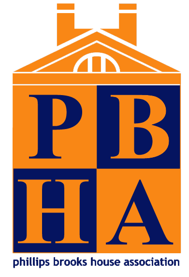

<!DOCTYPE html>
<html lang="en">
<head>
<meta charset="UTF-8">
<meta name="viewport" content="width=device-width, initial-scale=1.0">
<title>PBHA Alumni Network</title>
<!-- The mark only, squared: the wordmark under it is unreadable at 16px
     and renders as a grey smudge, and letterboxing the whole logo shrinks
     the part anyone can actually recognise. -->
<link rel="icon" type="image/png" href="favicon.png">
<link rel="apple-touch-icon" href="favicon.png">
<meta name="description" content="The alumni directory of the Phillips Brooks House Association.">
<link rel="preconnect" href="https://fonts.googleapis.com">
<link rel="preconnect" href="https://fonts.gstatic.com" crossorigin>
<link href="https://fonts.googleapis.com/css2?family=Work+Sans:ital,wght@0,300;0,400;0,500;0,600;0,700;1,400&display=swap" rel="stylesheet">
<style>
/* PBHA Alumni Directory
   Type, color, and control shapes are taken from measured values on pbha.org:
     body copy   Work Sans 15px / 500 / 1.6, prose 18.5px / 500 / 1.6
     h1          67px / 700 / 1.4 (their h1 leading really is that loose)
     h2          53px / 700 / 1.19
     h3          32px / 700, in orange — their section heads are orange, not black
     buttons     uppercase 13.3px / 500, letter-spacing .02em, radius 300px
   PBHA uses no cards, borders, or shadows: white ground, generous space, and
   orange for emphasis inside otherwise black text. */

:root {
  --white: #ffffff;
  --ink: #000000;
  --ink-soft: #2b2b2b;
  --ink-mute: #6b6b6b;
  --rule: #e6e6e6;
  --wash: #f6f5f3;
  --wash-2: #eceae6;

  --orange: #f98715;
  --orange-dark: #d96f06;
  --orange-wash: #fdf0e0;
  /* The band their footer sits on: their navy, carried far enough over the
     white page to read at the depth theirs does. Sampled against their
     footer rather than computed from the .44 alpha their section declares,
     which paints much lighter than the real thing. */
  --footer-band: #5a619b;
  /* PBHA's own navy, sampled from their logo file rather than guessed —
     the report leans on it as heavily as it does on the orange. */
  --navy: #051460;
  /* The warm ground PBHA's impact report uses between its navy blocks. */
  --cream: #f6ecdd;

  --sans: "Work Sans", "Helvetica Neue", Helvetica, Arial, sans-serif;

  /* Measured on pbha.org at a 1440px viewport, once their fade-in settles:
     content sits 86.4px from each edge — exactly 6vw — and is capped at
     1498px. Their header and their body share that gutter, so the logo lines
     up with the headings underneath it. clamp keeps it sane on phones and on
     very wide screens. */
  --max: 1498px;
  --pad: clamp(20px, 6vw, 120px);
}

* { box-sizing: border-box; }

html, body {
  margin: 0;
  padding: 0;
  background: var(--white);
  color: var(--ink);
  font-family: var(--sans);
  font-size: 15px;
  font-weight: 500;
  line-height: 1.6;
  -webkit-font-smoothing: antialiased;
}

a { color: inherit; }
button, input, select, textarea { font-family: inherit; }

/* ---------- type ---------- */

h1, h2, h3, h4 { margin: 0; font-weight: 700; letter-spacing: 0.01em; }

.h-display { font-size: clamp(40px, 5.2vw, 67px); line-height: 1.4; }
.h-1 { font-size: clamp(34px, 3.9vw, 53px); line-height: 1.19; }
/* Their section heads are orange by default — that is the single strongest
   signature of the site, so it is the default here too. */
.h-2 { font-size: clamp(26px, 2.4vw, 32px); line-height: 1.25; color: var(--orange); }
.h-3 { font-size: 20px; line-height: 1.3; }
.accent { color: var(--orange); }
/* Orange inline emphasis on numbers and key phrases, the way their body copy
   highlights "1,200 student volunteers" and "50 programs". */
.em-n { color: var(--orange); font-weight: 700; }
/* A drawn underline, not a typographic one: a single stroke with a lift
   through the middle, the way a marker does. The path is rotated 180°
   about the centre of its own viewBox rather than redrawn mirrored, so
   there is one set of coordinates to change if the shape is revisited.
   text-decoration cannot curve, so this is an SVG behind the text.
   box-decoration-break: clone gives each line its own stroke when the
   phrase wraps, instead of one stroke stretched across both — and since
   the path is stretched to each fragment's width, its vertical travel is
   kept shallow so a short fragment does not squash into a steep hook. */
.em-u {
  background-image: url("data:image/svg+xml,%3Csvg xmlns='http://www.w3.org/2000/svg' viewBox='0 0 300 14' preserveAspectRatio='none'%3E%3Cpath d='M3 7C58 9.6 152 10.1 236 8.5c22-.4 40-1.2 58-2.6' fill='none' stroke='%23f98715' stroke-width='3.2' stroke-linecap='round' transform='rotate(180 150 7)'/%3E%3C/svg%3E");
  background-repeat: no-repeat;
  background-position: left calc(100% - 0.02em);
  background-size: 100% 0.30em;
  padding-bottom: 0.12em;
  -webkit-box-decoration-break: clone;
  box-decoration-break: clone;
}

.lede { font-size: 18.5px; line-height: 1.6; font-weight: 500; color: var(--ink); }
/* The treatment their homepage gives "Each year, 1,200 student volunteers
   join the Phillips Brooks House Association...": large and bold, with the
   figures in orange and the organisation underlined. */
.statement {
  /* Three lines needs width ÷ font-size to stay above 34.4 — measured, and
     the same constant at every size tried. Below the 1498px page cap the
     content width is 0.88 of the viewport, so 2.5vw holds a ratio of 35.2
     at every width, and 36px is the ceiling once the column stops growing.
     Full width rather than 1,150px: that is what buys the larger type. */
  font-size: clamp(22px, 2.5vw, 36px);
  line-height: 1.34;
  font-weight: 700;
  letter-spacing: 0.01em;
  margin: 0;
}
/* Centred needs the box centred too, not just the text: at 940px in a
   1498px column, text-align alone would centre it inside a block still
   sitting against the left gutter. */
.statement-mid { margin-left: auto; margin-right: auto; text-align: center; }

.eyebrow {
  font-size: 11px;
  font-weight: 600;
  letter-spacing: 0.14em;
  text-transform: uppercase;
  color: var(--ink-mute);
}
.meta { font-size: 14px; font-weight: 500; color: var(--ink-mute); line-height: 1.5; }

/* ---------- layout ---------- */

.wrap { max-width: var(--max); margin: 0 auto; padding: 0 var(--pad); }
/* Vertical only — a padding shorthand here would reset the horizontal
   gutter .wrap sets, which is what had been pinning body content to the
   left edge while the header sat correctly inset. */
.page { padding-top: 26px; padding-bottom: 110px; }
.rule { height: 1px; background: var(--rule); border: 0; }


/* The alumni section's tabs, sitting inside the page rather than in a band
   of their own — a second full-width bar under pbha.org's read as two
   competing headers. */
/* Vertical only. A padding shorthand here resets the horizontal gutter
   .wrap sets, which pins the tabs to the window edge — the same trap that
   caught .page. */
.section-tabs { padding-top: 30px; display: flex; align-items: center; justify-content: space-between; gap: 24px; }

/* Sentence case, 15px/500, black — not uppercase. */
nav.site-nav { display: flex; align-items: center; gap: 24px; }
nav.site-nav button {
  background: none; border: 0; padding: 6px 0; cursor: pointer;
  font-size: 15px; font-weight: 500; color: var(--ink);
  border-bottom: 2px solid transparent;
}
nav.site-nav button:hover { color: var(--orange); }
nav.site-nav button.is-active { color: var(--orange); border-bottom-color: var(--orange); }

/* ---------- controls ---------- */

.btn {
  display: inline-flex; align-items: center; justify-content: center; gap: 8px;
  border-radius: 300px;
  border: 1px solid transparent;
  /* Their pills are genuinely chunky: 22.5px / 33px. */
  padding: 19px 32px;
  font-size: 13.3px;
  font-weight: 500;
  letter-spacing: 0.02em;
  text-transform: uppercase;
  line-height: 1;
  cursor: pointer;
  transition: opacity .1s linear, background .15s, color .15s, border-color .15s;
  white-space: nowrap;
  text-decoration: none;
}
.btn-primary { background: var(--orange); color: var(--white); border-color: var(--orange); }
/* pbha.org fades its buttons on hover — transition: opacity .1s linear —
   rather than shifting the fill. */
.btn-primary:hover { opacity: .8; }
.btn-ink { background: var(--ink); color: var(--white); border-color: var(--ink); }
.btn-ink:hover { background: var(--ink-soft); border-color: var(--ink-soft); }
.btn-ghost { background: transparent; color: var(--ink); border-color: var(--ink); }
.btn-ghost:hover { border-color: var(--orange); color: var(--orange); }
.btn-sm { padding: 11px 22px; font-size: 11.5px; }
.btn:disabled { opacity: .45; cursor: not-allowed; }
/* Shown as a button but not one — no pointer, no hover fade. */
.btn-static { cursor: default; }
.btn-static:hover { opacity: 1; }

.field { display: block; margin-bottom: 18px; }
.field > span { display: block; margin-bottom: 7px; }
.input, textarea.input {
  width: 100%;
  padding: 13px 15px;
  border: 1px solid var(--rule);
  border-radius: 2px;
  font-size: 15px;
  font-weight: 500;
  background: var(--white);
  color: var(--ink);
}
.input:focus { outline: 2px solid var(--orange); outline-offset: -1px; border-color: transparent; }
textarea.input { min-height: 100px; resize: vertical; line-height: 1.55; }

.search {
  display: flex; align-items: center; gap: 10px;
  border: 1px solid var(--ink);
  border-radius: 300px;
  padding: 12px 20px;
  background: var(--white);
}
.search input { border: 0; outline: 0; flex: 1; font-size: 14px; font-weight: 500; background: transparent; }

.chip {
  display: inline-flex; align-items: center; gap: 6px;
  border: 1px solid var(--rule);
  background: var(--white);
  border-radius: 300px;
  padding: 6px 13px;
  font-size: 12px;
  font-weight: 500;
  color: var(--ink-soft);
  cursor: pointer;
  transition: all .12s;
  line-height: 1.3;
}
.chip:not(.chip-static):hover { border-color: var(--ink); }
.chip.is-on { background: var(--ink); border-color: var(--ink); color: var(--white); }
.chip-static { cursor: default; background: var(--wash); border-color: transparent; }

.scope-btn {
  text-align: left;
  width: 100%;
  padding: 11px 18px;
  border-radius: 300px;
  border: 1px solid var(--rule);
  background: transparent;
  color: var(--ink-soft);
  font-size: 13.5px;
  font-weight: 500;
  cursor: pointer;
  transition: all .12s;
}
.scope-btn:hover { border-color: var(--ink); }
.scope-btn.is-on { background: var(--orange); border-color: var(--orange); color: var(--white); }

.check {
  display: flex; align-items: flex-start; gap: 10px;
  cursor: pointer; font-size: 13.5px; font-weight: 500; color: var(--ink-soft);
  line-height: 1.45;
}
.check .box {
  width: 16px; height: 16px; flex: none; margin-top: 3px;
  border: 1px solid var(--ink); background: var(--white);
}
.check.is-on .box { background: var(--orange); border-color: var(--orange); }
.check.is-on { color: var(--ink); }

/* ---------- cards ---------- */

/* pbha.org has no cards at all. A directory needs some containment, so these
   stay as flat as possible: hairline rule, square corners, no shadow, and no
   hover lift. */
.card {
  background: var(--white);
  border: 1px solid var(--rule);
  border-radius: 2px;
}

.person-card {
  display: flex; flex-direction: column;
  text-align: left; padding: 0; overflow: hidden;
  cursor: pointer;
  transition: border-color .15s;
}
.person-card:hover { border-color: var(--orange); }
.person-photo {
  aspect-ratio: 5 / 4;
  background: var(--wash-2);
  display: grid; place-items: center;
  position: relative;
  border-bottom: 1px solid var(--rule);
  overflow: hidden;
}
.person-photo img { width: 100%; height: 100%; object-fit: cover; }

/* A profile: square photo, name and chips beside it, then the text at the
   full width of the page. */
.profile-head {
  display: grid;
  grid-template-columns: 220px 1fr;
  gap: 32px;
  align-items: start;
  margin-bottom: 36px;
}
/* align-items: start lines up the boxes, not the letters. Between the top
   of the name's line box and the top of its capitals sit two things: the
   half-leading from line-height 1.19, and the gap between Work Sans's
   ascender and its cap height, which is the larger of the two (49px vs
   38px of ink at 53px). Measured together they come to .213em, and em
   resolves against the heading's own clamped size, so the correction
   holds at every window width. */
.profile-id .h-1 { margin-top: -0.213em; }
.profile-photo {
  aspect-ratio: 1 / 1;
  background: var(--wash-2);
  display: grid; place-items: center;
  border: 1px solid var(--rule);
  border-radius: 6px;
  overflow: hidden;
}
.profile-photo img { width: 100%; height: 100%; object-fit: cover; }
.profile-chips { display: flex; gap: 8px; flex-wrap: wrap; align-items: center; margin-top: 16px; }
.profile-act { margin-top: 14px; }
.profile-body { max-width: none; }

@media (max-width: 720px) {
  .profile-head { grid-template-columns: 1fr; gap: 20px; align-items: start; }
  .profile-photo { max-width: 220px; }
}
.initials {
  font-size: 23px; font-weight: 600; color: var(--ink); opacity: .26;
  letter-spacing: 0.01em; text-indent: 0.01em;
}
.stamp {
  position: absolute; top: 12px; left: 12px;
  background: var(--white);
  border-radius: 300px;
  padding: 5px 12px;
  font-size: 9.5px; font-weight: 600; letter-spacing: 0.12em; text-transform: uppercase;
}
.stamp-year {
  position: absolute; top: 12px; right: 12px;
  background: var(--orange); color: var(--white);
  border-radius: 300px; padding: 5px 12px;
  font-size: 10px; font-weight: 600; letter-spacing: 0.08em;
}
.person-body { padding: 18px 20px 22px; }
.person-actions { margin-top: 14px; }

.grid-people { display: grid; grid-template-columns: repeat(3, 1fr); gap: 22px; }

.row-person {
  display: grid;
  grid-template-columns: 46px 1.3fr 1.2fr 1fr 150px;
  gap: 16px; align-items: center;
  width: 100%; text-align: left;
  padding: 15px 20px;
  border: 0; border-bottom: 1px solid var(--rule);
  background: transparent; cursor: pointer;
  transition: background .12s;
  font-weight: 500;
}
.row-person:last-child { border-bottom: 0; }
.row-person:hover { background: var(--wash); }
.avatar {
  width: 46px; height: 46px; border-radius: 50%;
  background: var(--wash-2); display: grid; place-items: center; overflow: hidden;
  font-size: 14px; font-weight: 700; color: var(--ink); opacity: .85;
}
.avatar img { width: 100%; height: 100%; object-fit: cover; }

.stat-row { display: flex; gap: 52px; flex-wrap: wrap; }
.stat-n { font-size: 44px; font-weight: 700; line-height: 1.1; color: var(--orange); }
.tally-band {
  display: grid; grid-template-columns: repeat(auto-fit, minmax(150px, 1fr));
  gap: 24px;
  margin-top: 30px;
  padding-top: 22px;
  border-top: 1px solid var(--rule);
}
.tally-band .stat-n { font-size: 34px; }

/* Their bulleted facts: orange underlined figure, black text after it. */
.fact-list { list-style: none; margin: 0; padding: 0; }
.fact-list li { font-size: 15px; font-weight: 500; line-height: 1.6; margin-bottom: 8px; }
.fact-list li::before { content: "·"; color: var(--orange); font-weight: 700; margin-right: 10px; }

.empty { padding: 72px 24px; text-align: center; color: var(--ink-mute); }

.banner {
  border-left: 3px solid var(--orange);
  background: var(--orange-wash);
  padding: 13px 17px;
  font-size: 14px;
  font-weight: 500;
}
.banner-error { border-left-color: #c0392b; background: #fdeceb; color: #8c271c; }

footer.site {
  background: var(--footer-band);
  padding: 56px 0 64px;
  margin-top: 64px;
}
/* Two 370px columns at their measured positions: the left one at the page
   gutter, the right one starting a little past the halfway mark. */
.footer-grid {
  display: grid;
  grid-template-columns: 370px 1fr;
  gap: 422px;
}
.footer-col { max-width: 370px; }
.footer-search {
  display: flex; align-items: center; gap: 10px;
  margin-top: 40px;
  border: 1px solid #eeeeee;
  padding: 11px 14px;
  width: 370px;
  max-width: 100%;
  color: var(--ink-soft);
}
.footer-search input {
  border: 0; outline: 0; background: transparent;
  font-size: 15px; font-weight: 500; color: var(--ink);
  width: 100%;
}
.footer-search input::placeholder { color: var(--ink-soft); opacity: .75; }
.footer-h { font-size: 18.5px; font-weight: 700; color: var(--ink); margin-bottom: 20px; }
.footer-p { font-size: 15px; font-weight: 500; color: var(--ink); margin: 0 0 16px; }
.footer-p strong { font-weight: 700; }
.footer-p a, .footer-links a {
  color: var(--orange);
  text-decoration: underline;
  text-underline-offset: 3px;
}
.footer-links { display: flex; flex-direction: column; gap: 18px; align-items: flex-start; font-size: 15px; font-weight: 500; }

@media (max-width: 1240px) {
  .footer-grid { grid-template-columns: 1fr 1fr; gap: 48px; }
}
@media (max-width: 700px) {
  .footer-grid { grid-template-columns: 1fr; gap: 36px; }
}

/* ---------- responsive ---------- */

@media (max-width: 1100px) {
  .grid-people { grid-template-columns: repeat(2, 1fr); }
}
@media (max-width: 860px) {
  .gate-layout { grid-template-columns: 1fr !important; gap: 40px !important; }
  .directory-layout { grid-template-columns: 1fr !important; }
  .directory-rail {
    position: static;
    max-height: none;
    overflow: visible;
    padding-right: 0;
  }
  .grid-people { grid-template-columns: 1fr; }
  .row-person { grid-template-columns: 46px 1fr; }
  .row-person > :nth-child(n+3) { grid-column: 2; }
  nav.site-nav { gap: 16px; }
}


.map-btn {
  width: 30px; height: 30px; padding: 0;
  border: 1px solid var(--rule); background: var(--white); color: var(--ink);
  cursor: pointer; font-size: 15px; line-height: 0;
  display: flex; align-items: center; justify-content: center;
}
.map-btn:hover { border-color: var(--orange); color: var(--orange); }

.card-pad { padding: 24px; }

/* The filter rail sticks below the section header, and scrolls within
   whatever height is left so the filters at its bottom stay reachable on a
   short window. overscroll-behavior stops a flick at the end of the rail
   from carrying on into the page behind it. */
.directory-rail {
  position: sticky;
  top: 90px;
  align-self: start;
  max-height: calc(100vh - 114px);
  overflow-y: auto;
  overscroll-behavior: contain;
  padding-right: 10px;
}
.directory-rail::-webkit-scrollbar { width: 6px; }
.directory-rail::-webkit-scrollbar-thumb { background: var(--rule); border-radius: 300px; }
.directory-rail::-webkit-scrollbar-thumb:hover { background: var(--ink-mute); }

/* The signed-out landing: one centred column rather than a split hero. */
.gate { max-width: 560px; margin: 40px auto 0; text-align: center; }
.gate-tabs { display: flex; gap: 10px; justify-content: center; margin: 36px 0 28px; }
.gate-form {
  text-align: left;
  border: 1px solid var(--rule);
  border-radius: 2px;
  padding: 32px;
}
.two-up { display: grid; grid-template-columns: 1fr 1fr; gap: 16px; }
@media (max-width: 560px) { .two-up { grid-template-columns: 1fr; gap: 0; } }

/* Chips, stamps, pills, and the cards themselves are controls, not copy.
   Without this, dragging across a card or double-clicking a chip selects its
   label and leaves it highlighted. Prose — bios, names on the profile page,
   contact details — stays selectable. */
.chip, .stamp, .stamp-year, .scope-btn, .btn, .check, .eyebrow,
.person-card, .row-person, nav.site-nav button, .map-btn, .account-btn, .account-menu button,
.pill-select, .pill-menu button, .site-bar-here, .combo-toggle, .amount, .msg-row, .tab-count {
  -webkit-user-select: none;
  user-select: none;
}

.account-btn {
  width: 38px; height: 38px; padding: 0;
  border-radius: 50%;
  border: 0;
  background: var(--orange);
  color: var(--white);
  display: grid; place-items: center;
  cursor: pointer;
  overflow: hidden;
  transition: background .15s;
}
.account-btn:hover { background: var(--orange-dark); }
.account-btn img { width: 100%; height: 100%; object-fit: cover; }

/* The avatar clips its overflow for the photo, so the unread dot cannot
   ride outside it. It sits just inside the top-right edge instead, with a
   white ring so it reads against both the orange and a photo. */
.account-wrap { position: relative; display: inline-flex; }
.account-dot {
  position: absolute; top: 0; right: 0;
  width: 10px; height: 10px;
  border-radius: 50%;
  background: var(--ink);
  box-shadow: 0 0 0 2px var(--white);
  pointer-events: none;
}

/* The menu row is a block button; the count has to sit on its right. */
.account-menu button .tab-count { float: right; margin-left: 0; }

.account-menu {
  position: absolute;
  top: calc(100% + 10px);
  right: 0;
  min-width: 210px;
  background: var(--white);
  border: 1px solid var(--rule);
  border-radius: 2px;
  box-shadow: 0 8px 24px rgba(0, 0, 0, .1);
  padding: 6px;
  z-index: 50;
}
.account-who { padding: 10px 12px 12px; border-bottom: 1px solid var(--rule); margin-bottom: 6px; }
.account-menu button {
  display: block; width: 100%; text-align: left;
  padding: 10px 12px;
  background: none; border: 0;
  font-size: 14px; font-weight: 500; color: var(--ink);
  cursor: pointer;
}
.account-menu button:hover { background: var(--wash); color: var(--orange); }


/* ---------- welcome ---------- */

.link-grid {
  display: grid;
  grid-template-columns: repeat(3, 1fr);
  gap: 18px;
}
.link-card {
  display: block;
  text-align: left;
  background: var(--white);
  border: 1px solid var(--rule);
  border-radius: 2px;
  padding: 24px;
  cursor: pointer;
  text-decoration: none;
  color: inherit;
  font: inherit;
  transition: border-color .15s;
}
.link-card:hover { border-color: var(--orange); }
.link-card p { margin: 10px 0 16px; }
.tile-cta { font-size: 13px; font-weight: 600; color: var(--orange); }

/* Get involved: a numbered index, ruled between rows. */
.involve-list { list-style: none; margin: 0; padding: 0; }
.involve-list li { border-bottom: 1px solid var(--rule); }
.involve-list li:first-child { border-top: 1px solid var(--rule); }
.involve-row {
  display: grid;
  /* Every track here is content-independent on purpose. Each row is its
     own grid, so an `auto` or a bare `fr` track sizes to that row's own
     text and the columns stop lining up down the list. */
  grid-template-columns: 56px 26% minmax(0, 1fr) 190px;
  gap: 24px;
  align-items: baseline;
  width: 100%;
  padding: 22px 4px;
  background: none; border: 0;
  text-align: left;
  text-decoration: none;
  color: inherit;
  font: inherit;
  cursor: pointer;
  transition: background .15s;
}
.involve-row:hover { background: var(--wash); }
.involve-n {
  font-size: 13px; font-weight: 700;
  color: var(--ink); opacity: .3;
  letter-spacing: .04em;
}
.involve-title { font-size: 19px; font-weight: 700; line-height: 1.3; }
.involve-body { font-size: 14px; color: var(--ink-mute); line-height: 1.55; }
.involve-cta {
  font-size: 13px; font-weight: 600; color: var(--orange);
  white-space: nowrap; justify-self: end;
}
/* The arrow steps forward on hover, the way the site's buttons do. */
.involve-cta span { display: inline-block; transition: transform .15s; }
.involve-row:hover .involve-cta span { transform: translateX(3px); }
.involve-row:hover .involve-n { opacity: .55; }

@media (max-width: 900px) {
  .involve-row {
    grid-template-columns: 40px 1fr;
    gap: 6px 16px;
    row-gap: 6px;
  }
  .involve-n { grid-row: 1; }
  .involve-title { grid-column: 2; }
  .involve-body { grid-column: 2; }
  .involve-cta { grid-column: 2; justify-self: start; margin-top: 4px; }
}

/* ---------- study ---------- */

.stat-band {
  display: grid;
  grid-template-columns: repeat(auto-fit, minmax(180px, 1fr));
  gap: 32px;
  margin-top: 36px;
}
/* Ruled, not boxed. A bordered card around every table, chart and tally
   turned the page into a stack of rectangles; hairlines carry the same
   structure without drawing a container around it. */
.finding {
  display: grid;
  grid-template-columns: 1fr 90px 110px;
  gap: 16px;
  align-items: baseline;
  padding: 14px 2px;
  border-bottom: 1px solid var(--rule);
  font-size: 15px;
}
.finding:last-child { border-bottom: 0; }
.finding-head {
  font-size: 11px; font-weight: 700; letter-spacing: .14em;
  text-transform: uppercase; color: var(--ink-mute);
  padding-bottom: 10px;
  border-bottom: 2px solid var(--orange);
}
.finding .em-n { font-size: 17px; }

.bar-row {
  display: grid;
  grid-template-columns: 150px 1fr 46px;
  gap: 14px;
  align-items: center;
  margin-bottom: 10px;
  font-size: 14px;
}
.bar-row:last-child { margin-bottom: 0; }
.bar-label { font-weight: 500; }
.bar-track { background: var(--wash-2); height: 14px; display: block; }
.bar-fill { background: var(--orange); height: 100%; display: block; }
.bar-value { font-weight: 700; color: var(--orange); text-align: right; }

.link-orange { color: var(--orange); text-decoration: underline; text-underline-offset: 3px; }

/* ---- the study page ----------------------------------------------- *
 *
 * Two problems at once: the page should reach both gutters, and a line of
 * prose 1,270px wide is about 200 characters, which nobody can read — the
 * eye loses the start of the next line. Every block below solves it the
 * same way: the band fills the width, and the text inside it sits in a
 * column of its own, either beside a heading or beside its own data.
 */
.study { font-size: 16px; }
.study p { line-height: 1.68; }
/* .study p is a class plus a type, so it outranks a bare class — it was
   quietly overriding the opening paragraph's own line-height. Two classes
   and a type to win it back. */
.study p.statement { line-height: 1.34; }

/* ---- telling the parts apart ---------------------------------------- *
 *
 * The page was one long column of orange headings over white, so every
 * section looked like the section before it and the whole thing read as
 * undifferentiated. Three devices fix that, in order of force: a change
 * of ground, a label naming what kind of part this is, and a different
 * treatment for the things inside it.
 */
.part { padding: 64px 0; }
.part-label {
  font-size: 11.5px; font-weight: 700;
  letter-spacing: .2em; text-transform: uppercase;
  color: var(--orange);
  text-align: center;
  margin-bottom: 10px;
}

/* Bleeds to the page gutters, which below the 1498px cap is the window
   edge. Deliberately not a 100vw trick: 100vw includes the scrollbar and
   would push the page sideways. */
.bleed {
  margin-inline: calc(var(--pad) * -1);
  padding-inline: var(--pad);
}
.ground-navy {
  background: var(--navy);
  color: var(--white);
  margin-top: 56px;
  margin-bottom: 56px;
}
.ground-navy .h-2 { color: var(--white); }
.ground-navy .part-label { color: var(--orange); }
.ground-navy .eyebrow { color: rgba(255, 255, 255, .62); }
.ground-navy .meta { color: rgba(255, 255, 255, .72); }
.ground-navy .em-n { color: var(--orange); }

.ground-wash { background: var(--wash); margin-top: 56px; }

/* A band with a curved edge needs room for the curve, and the curve has
   to sit outside the padding so text never lands on it. */
.wave { display: block; width: 100%; height: 96px; position: absolute; left: 0; }
.wave-top { top: 0; }
.wave-bottom { bottom: -1px; }
.bleed { position: relative; }
.wave-in { padding-top: 86px; margin-top: 0; }
.wave-out { padding-bottom: 96px; margin-bottom: 0; }

/* Heading at the left, body beside it. The page was every heading centred
   over its own text, which is what made one section look like the next;
   alternating this against the centred bands is most of the variety. */
.band-split {
  display: grid;
  grid-template-columns: minmax(0, 330px) minmax(0, 1fr);
  gap: 56px;
  align-items: start;
}
.band-split .part-label { text-align: left; margin-bottom: 8px; }
.band-split .h-2 { text-align: left; margin: 0; }
.band-split .band-body p:first-child { margin-top: 0; }


/* pbha.org's own alumni-impact page centres its section headings above
   full-width bodies rather than setting them beside. Matching that means
   the heading is not a column, so the body has the whole width — which is
   what .prose-2 is for. */
.band { display: block; }
.band-head { margin: 0 0 22px; text-align: center; }
.band-body { min-width: 0; }

/* Two columns of newspaper text: fills the page, halves the measure.
   Lands near 600px a column at full width, which is where PBHA sets its
   own body text. */
.prose-2 { columns: 2; column-gap: 56px; }
/* No break-inside: avoid-column here. It keeps a paragraph whole, which
   for a block of ONE long paragraph means the whole thing lands in column
   one and column two is empty. Text flowing across the boundary is what
   newspaper columns are. */
.prose-2 p { margin-top: 0; }
.prose-2 p:last-child { margin-bottom: 0; }


/* A quote from an alum: a soft panel with the mark above it and the words
   centred under it, in PBHA's colours. Set upright rather than italic —
   at this size a whole italic paragraph is harder work than it is worth,
   and the panel is already saying "this is someone talking". */
.pull {
  margin: 40px 0 0;
  padding: 44px 5% 40px;
  background: var(--cream);
  border-radius: 28px;
  text-align: center;
}
.pull-mark {
  display: block;
  font-size: 52px; line-height: .6;
  font-weight: 700;
  color: var(--orange);
  margin-bottom: 26px;
}
.pull blockquote { margin: 0; }
.pull p {
  margin: 0 auto;
  /* Wide inside the panel rather than a narrow column down its middle:
     the block is the frame, the words should use it. */
  max-width: 68ch;
  font-size: clamp(17px, 1.5vw, 21px);
  line-height: 1.62;
  font-weight: 500;
  color: var(--ink);
}
/* The part the report puts in bold, in the accent — the one line a reader
   takes away if they take away nothing else. */
.pull strong { color: var(--orange); font-weight: 700; }
/* The carousel around them. */
.quotes-head {
  display: flex; align-items: flex-end; justify-content: space-between;
  gap: 24px; flex-wrap: wrap;
}
.quotes-head .part-label { text-align: left; margin-bottom: 6px; }
.quotes-head .h-2 { text-align: left; margin: 0; }
.quotes-nav { display: flex; gap: 10px; }
.quotes-nav button {
  width: 44px; height: 44px;
  display: grid; place-items: center;
  background: var(--white);
  border: 1px solid var(--rule);
  border-radius: 10px;
  color: var(--ink);
  cursor: pointer;
  transition: border-color .15s, color .15s;
}
.quotes-nav button:hover { border-color: var(--orange); color: var(--orange); }

/* All six in one cell: the stage is as tall as the longest quote, so
   paging through does not make the panel jump. */
.quotes-stage { display: grid; }
.quotes-stage > * { grid-area: 1 / 1; }
.quote-slide {
  opacity: 0; visibility: hidden;
  transition: opacity .35s ease;
}
.quote-slide.is-on { opacity: 1; visibility: visible; }

.quotes-dots { display: flex; gap: 8px; justify-content: center; margin-top: 22px; }
.quotes-dots button {
  width: 8px; height: 8px; padding: 0;
  border: 0; border-radius: 50%;
  background: var(--wash-2);
  cursor: pointer;
  transition: background .15s, transform .15s;
}
.quotes-dots button:hover { background: var(--ink-mute); }
.quotes-dots button.is-on { background: var(--orange); transform: scale(1.3); }

@media (prefers-reduced-motion: reduce) {
  .quote-slide { transition: none; }
}

.pull figcaption {
  margin-top: 22px;
  font-size: 12px; font-weight: 700;
  letter-spacing: .16em; text-transform: uppercase;
  color: var(--ink-mute);
}

/* The three components of PBHA's model, and the five ways: both are
   numbered lists where the number is a column, not a bullet. */
/* Three abreast rather than stacked: three short paragraphs in one column
   leave two thirds of the band empty. */
.model-list { list-style: none; margin: 0; padding: 0; display: grid; grid-template-columns: repeat(3, 1fr); gap: 34px; }
.model-list li { border-top: 3px solid var(--orange); padding-top: 18px; }
.model-list p { font-size: 15px; line-height: 1.6; color: var(--ink-mute); }
.model-n { font-size: 13px; font-weight: 700; color: var(--orange); letter-spacing: .04em; }

/* Number, narrative, data. The prose column is the readable measure; the
   data column carries the tables and charts, and between them the section
   reaches the gutter without a 200-character line anywhere in it. */
.way {
  display: grid;
  grid-template-columns: 84px minmax(0, 1fr) minmax(0, 1.1fr);
  gap: 20px 40px;
  padding: 48px 0;
  border-top: 1px solid var(--rule);
}
.way-solo { grid-template-columns: 76px minmax(0, 1fr); }
.way-solo .way-text { columns: 2; column-gap: 52px; }
.way-solo .way-text .way-title { column-span: all; }
.way-text > p { margin-top: 0; }
.way-data { min-width: 0; }
/* Every chart, not just a chart after a chart: the first one sat flush
   against the findings table above it. */
.chart { margin-top: 34px; }
.chart-body { padding-top: 4px; }


/* Full-strength orange at a large size, rather than a filled disc. The
   disc read as one more block; the numeral does the same wayfinding job
   without adding a shape to a page that already had too many. */
.way-n {
  font-size: 58px; font-weight: 700; line-height: .85;
  color: var(--orange);
  /* Stays put while its section scrolls, so a reader three tables deep
     still knows which of the five they are in. */
  position: sticky; top: 96px; align-self: start;
}
.way-title {
  font-size: clamp(21px, 2.1vw, 27px); line-height: 1.25;
  font-weight: 700;
  margin: 0 0 14px;
}

.plain-list { margin: 0; padding-left: 20px; }
.plain-list li { margin-bottom: 6px; line-height: 1.55; }


/* ---- motion ------------------------------------------------------- *
 *
 * Introduction, not decoration: nothing loops, nothing runs twice, and
 * everything is already in its finished state for anyone who has asked
 * their system for less of it.
 */
/* Note what is NOT here: a rule hiding .reveal. The hidden state lives
   under .is-armed, which only script adds — so without script, or with
   reduced motion, or in a browser with no IntersectionObserver, every
   block is simply visible. Content must never depend on an animation
   having run. */
.bar-fill { width: var(--w); }

.is-armed .reveal {
  opacity: 0;
  transform: translateY(16px);
  transition: opacity .55s ease, transform .55s cubic-bezier(.22, .68, .3, 1);
  will-change: opacity, transform;
}
.is-armed .reveal.is-in { opacity: 1; transform: none; will-change: auto; }

.is-armed .bar-fill { width: 0; transition: width .95s cubic-bezier(.22, .68, .3, 1); }
.is-armed .is-in .bar-fill { width: var(--w); }

@media (max-width: 1100px) {
  .band-split { grid-template-columns: 1fr; gap: 18px; }
  .way { grid-template-columns: 64px minmax(0, 1fr); }
  .way-data { grid-column: 2; }
  .model-list { grid-template-columns: repeat(2, 1fr); }
  /* Stacked, the prose has the whole column and would run to about a
     hundred characters. ch ties the cap to the measure itself rather than
     to a pixel width that means something different at every font size. */
  .way-text > p, .way-text .plain-list { max-width: 68ch; }
}
/* Below this, a column is too narrow to read: two columns of 340px are
   about 42 characters each, which breaks lines more than it helps. */
@media (max-width: 900px) {
  .prose-2, .way-solo .way-text { columns: 1; }
}
@media (max-width: 720px) {
  .study { font-size: 15.5px; }
  .way { grid-template-columns: 1fr; gap: 10px; padding: 32px 0; }
  .way-n { font-size: 38px; position: static; }
  .way-data { grid-column: 1; }
  .way-solo .way-text, .prose-2 { columns: 1; }
  .model-list { grid-template-columns: 1fr; gap: 20px; }
  .pull { padding: 32px 22px 28px; border-radius: 20px; }
}

/* ---------- archives ---------- */

.archives { font-size: 16px; }
.archives p { line-height: 1.68; }
.archives p.statement { line-height: 1.34; }

.decades { list-style: none; margin: 40px 0 0; padding: 0; }
.decade { border-top: 1px solid var(--rule); }
.decade:last-child { border-bottom: 1px solid var(--rule); }
.decade h2 { margin: 0; font: inherit; }

.decade-btn {
  display: flex; align-items: baseline; gap: 20px;
  width: 100%;
  padding: 26px 4px;
  background: none; border: 0;
  text-align: left; font: inherit;
  cursor: pointer;
  transition: background .15s;
}
.decade-btn:hover { background: var(--wash); }
.decade-n {
  font-size: clamp(28px, 3vw, 42px); font-weight: 700; line-height: 1;
  color: var(--orange);
  min-width: 3.4em;
}
.decade-t {
  font-size: 13px; font-weight: 600;
  letter-spacing: .1em; text-transform: uppercase;
  color: var(--ink-mute);
}
/* A plus that becomes a minus, drawn rather than typed so it sits on the
   baseline the same way at every size. */
.decade-mark {
  margin-left: auto; align-self: center;
  position: relative; width: 16px; height: 16px; flex: none;
}
.decade-mark::before, .decade-mark::after {
  content: ""; position: absolute; inset: 0; margin: auto;
  background: var(--ink);
  transition: transform .25s ease, opacity .25s ease;
}
.decade-mark::before { width: 16px; height: 2px; }
.decade-mark::after { width: 2px; height: 16px; }
.decade.is-open .decade-mark::after { transform: rotate(90deg); opacity: 0; }
.decade.is-open .decade-mark::before { background: var(--orange); }

.decade-panel { display: grid; grid-template-rows: 1fr; }
/* Any `display` beats the hidden attribute's own display:none, so every
   panel rendered open however carefully the attribute was set. `hidden`
   is still what does the hiding — it keeps the closed decades out of the
   accessibility tree and out of find-in-page, which display alone would
   not. */
.decade-panel[hidden] { display: none; }
.decade-inner { overflow: hidden; padding: 0 4px 34px; min-width: 0; }
.decade-inner .plain-list { padding-left: 18px; margin: 0 0 26px; max-width: 70ch; }
.decade-inner .plain-list li { margin-bottom: 10px; }
.decade-none { color: var(--ink-mute); font-size: 14.5px; margin: 0; }

/* The photographs, scrolled sideways. */
.strip-wrap { position: relative; }
.strip {
  display: flex; gap: 16px;
  overflow-x: auto;
  scroll-snap-type: x mandatory;
  scroll-padding-left: 4px;
  padding-bottom: 6px;
  /* No visible scrollbar over the photographs; the arrows and a drag do
     the same job. */
  scrollbar-width: none;
}
.strip::-webkit-scrollbar { display: none; }
.strip figure {
  margin: 0; flex: 0 0 auto;
  width: min(340px, 74vw);
  scroll-snap-align: start;
}
.strip img {
  width: 100%; aspect-ratio: 3 / 2; object-fit: cover;
  border-radius: 4px; display: block;
  background: var(--wash-2);
}
.strip figcaption {
  margin-top: 10px;
  font-size: 12.5px; line-height: 1.45; color: var(--ink-mute);
}
.strip figcaption span {
  display: block; margin-top: 3px;
  font-size: 11px; font-weight: 700;
  letter-spacing: .12em; text-transform: uppercase;
  color: var(--orange);
}

.strip-nav { display: flex; gap: 10px; margin-top: 16px; }
.strip-nav button {
  width: 40px; height: 40px;
  display: grid; place-items: center;
  background: var(--white);
  border: 1px solid var(--rule);
  border-radius: 10px;
  color: var(--ink);
  cursor: pointer;
  transition: border-color .15s, color .15s;
}
.strip-nav button:hover { border-color: var(--orange); color: var(--orange); }

.story-grid {
  display: grid;
  grid-template-columns: repeat(3, 1fr);
  gap: 14px;
}
.story {
  display: block;
  border: 1px solid var(--rule);
  border-radius: 2px;
  padding: 16px 18px;
  text-decoration: none;
  color: inherit;
  transition: border-color .15s;
}
.story:hover { border-color: var(--orange); }
.story-n { display: block; font-size: 12px; font-weight: 700; color: var(--orange); letter-spacing: .06em; }
.story-who { display: block; font-size: 16px; font-weight: 600; margin: 4px 0 4px; }

@media (max-width: 1000px) {
  .link-grid, .story-grid { grid-template-columns: repeat(2, 1fr); }
}
@media (max-width: 700px) {
  .link-grid, .story-grid { grid-template-columns: 1fr; }
  .finding { grid-template-columns: 1fr 60px 70px; gap: 10px; }
  .bar-row { grid-template-columns: 110px 1fr 40px; }
}

/* A dropdown that belongs to the site rather than to the OS. */
.pill-select {
  display: inline-flex; align-items: center; gap: 10px;
  border: 1px solid var(--ink);
  background: var(--white);
  color: var(--ink);
  border-radius: 300px;
  padding: 9px 16px;
  font-size: 13px;
  font-weight: 500;
  cursor: pointer;
  white-space: nowrap;
}
.pill-select:hover { border-color: var(--orange); color: var(--orange); }
.pill-wrap { position: relative; display: inline-block; }
.pill-menu {
  position: absolute;
  top: calc(100% + 8px);
  left: 0;
  right: auto;
  min-width: 220px;
  background: var(--white);
  border: 1px solid var(--rule);
  border-radius: 2px;
  box-shadow: 0 8px 24px rgba(0, 0, 0, .1);
  padding: 6px;
  z-index: 50;
}
.pill-menu button {
  display: block; width: 100%; text-align: left;
  padding: 10px 12px;
  background: none; border: 0;
  font-size: 14px; font-weight: 500; color: var(--ink);
  cursor: pointer;
}
.pill-menu button:hover { background: var(--wash); color: var(--orange); }
.pill-menu button.is-on { background: var(--orange); color: var(--white); }

.account-initials { font-size: 13px; font-weight: 700; letter-spacing: 0.01em; text-indent: 0.01em; }

/* ---------- pbha.org's own bar, above the alumni section ---------- */

.site-bar {
  position: sticky;
  top: 0;
  z-index: 40;
  background: var(--white);
  border-bottom: 1px solid var(--rule);
}
.site-bar-inner {
  display: flex;
  align-items: center;
  gap: 26px;
  max-width: var(--max);
  margin: 0 auto;
  padding: 0 var(--pad);
  min-height: 65px;
}
.site-bar-logo { flex: none; display: flex; }
.site-bar-logo img { width: 35px; height: 51px; object-fit: contain; }
.site-bar-nav { display: flex; align-items: center; gap: 26px; flex-wrap: wrap; }
.site-bar-nav a, .site-bar-here {
  font-size: 15px; font-weight: 500; color: var(--ink);
  text-decoration: none; white-space: nowrap;
}
.site-bar-nav a:hover { color: var(--orange); }
/* Exactly how pbha.org marks the section you are in: a 1px black rule
   painted as a background gradient, sitting 1.5px above the bottom of the
   text box. Not orange, and not a border. */
.site-bar-here {
  color: var(--ink);
  background-image: linear-gradient(rgb(0, 0, 0), rgb(0, 0, 0));
  background-repeat: repeat-x;
  background-size: 1px 1px;
  background-position: 0 calc(100% - 1.5px);
}
.site-bar-actions { margin-left: auto; display: flex; align-items: center; gap: 18px; }
.site-bar-actions a { color: var(--ink); display: flex; text-decoration: none; }
.site-bar-actions a:hover { color: var(--orange); }
.site-bar-actions .btn:hover { color: var(--white); }

/* The alumni row underneath reads as a subsection of the bar above it. */

@media (max-width: 1180px) {
  .site-bar-actions a:not(.btn) { display: none; }
  .site-bar-inner { padding-top: 10px; padding-bottom: 10px; }
}
@media (max-width: 860px) {
  .site-bar-nav { gap: 14px; }
  .site-bar-nav a, .site-bar-here { font-size: 14px; }
}

.combo { position: relative; }
.combo .input { padding-right: 40px; }
.combo-toggle {
  position: absolute;
  right: 1px; top: 1px; bottom: 1px;
  width: 36px;
  display: grid; place-items: center;
  background: none; border: 0;
  color: var(--ink-mute);
  cursor: pointer;
}
.combo-toggle:hover { color: var(--orange); }
.combo-menu { left: 0; right: auto; min-width: 100%; max-height: 260px; overflow-y: auto; }

/* ---------- donate ---------- */

.give-layout { display: grid; grid-template-columns: 1fr 340px; gap: 56px; align-items: start; }

.amount-grid { display: grid; grid-template-columns: repeat(auto-fill, minmax(110px, 1fr)); gap: 10px; max-width: 620px; }
.amount {
  padding: 16px 12px;
  border: 1px solid var(--rule);
  background: var(--white);
  border-radius: 2px;
  font-size: 16px; font-weight: 600; color: var(--ink);
  cursor: pointer;
  transition: border-color .12s, background .12s, color .12s;
}
.amount:hover { border-color: var(--ink); }
.amount.is-on { background: var(--orange); border-color: var(--orange); color: var(--white); }

.pill-row { display: flex; flex-wrap: wrap; gap: 8px; max-width: 700px; }

.give-summary {
  position: sticky;
  top: 90px;
  border: 1px solid var(--rule);
  border-radius: 2px;
  padding: 24px;
}
.give-total { font-size: 40px; font-weight: 700; line-height: 1.1; color: var(--orange); }
.give-lines { display: grid; grid-template-columns: auto 1fr; gap: 6px 16px; margin: 0; font-size: 13.5px; }
.give-lines dt { color: var(--ink-mute); }
.give-lines dd { margin: 0; font-weight: 500; }

.society-row { display: grid; grid-template-columns: repeat(4, 1fr); gap: 18px; }
.society { border-top: 2px solid var(--orange); padding-top: 14px; }
.society-level { font-size: 13px; font-weight: 700; color: var(--orange); margin-bottom: 6px; }

@media (max-width: 1000px) {
  .give-layout { grid-template-columns: 1fr; gap: 32px; }
  .give-summary { position: static; }
  .society-row { grid-template-columns: repeat(2, 1fr); }
}
@media (max-width: 620px) {
  .society-row { grid-template-columns: 1fr; }
}

/* ---------- messages ---------- */

.tab-count {
  display: inline-grid; place-items: center;
  min-width: 18px; height: 18px; padding: 0 5px; margin-left: 7px;
  border-radius: 300px;
  background: var(--orange); color: var(--white);
  font-size: 11px; font-weight: 700; line-height: 1;
  vertical-align: 1px;
}

.msg-layout { display: grid; grid-template-columns: 320px 1fr; gap: 18px; align-items: start; }
.msg-list { overflow: hidden; max-height: 620px; overflow-y: auto; }
.msg-row {
  display: grid; grid-template-columns: 38px 1fr auto; gap: 12px; align-items: center;
  width: 100%; text-align: left;
  padding: 14px 16px;
  border: 0; border-bottom: 1px solid var(--rule);
  background: none; cursor: pointer; font: inherit;
}
.msg-row:last-child { border-bottom: 0; }
.msg-row:hover { background: var(--wash); }
.msg-row.is-on { background: var(--wash-2); }
.msg-row .avatar { width: 38px; height: 38px; }
.msg-name { display: block; font-size: 14.5px; font-weight: 600; }
.msg-dot {
  display: inline-block; width: 7px; height: 7px; margin-left: 7px;
  border-radius: 50%; background: var(--orange);
}
.msg-snippet {
  display: block; font-size: 13px; color: var(--ink-mute);
  white-space: nowrap; overflow: hidden; text-overflow: ellipsis;
}

.msg-pane { display: flex; flex-direction: column; min-height: 520px; max-height: 620px; }
.msg-head {
  padding: 14px 20px; border-bottom: 1px solid var(--rule);
  display: flex; align-items: center; justify-content: space-between; gap: 16px;
}
.msg-head-name {
  background: none; border: 0; padding: 0; cursor: pointer;
  font: inherit; font-size: 16px; font-weight: 600; color: var(--ink);
}
.msg-head-name:hover { color: var(--orange); }
.msg-body { flex: 1; overflow-y: auto; padding: 20px; display: flex; flex-direction: column; gap: 10px; }

.bubble-row { display: flex; }
.bubble-row.mine { justify-content: flex-end; }
.bubble {
  max-width: 78%;
  background: var(--wash);
  border-radius: 14px;
  padding: 10px 14px 20px;
  font-size: 14.5px;
  line-height: 1.5;
  position: relative;
  white-space: pre-wrap;
  word-break: break-word;
}
.bubble-row.mine .bubble { background: var(--orange); color: var(--white); }
.bubble-time {
  position: absolute; right: 12px; bottom: 5px;
  font-size: 10.5px; opacity: .6;
}

.msg-compose { display: flex; gap: 10px; align-items: flex-end; padding: 14px 20px; border-top: 1px solid var(--rule); }
.msg-compose textarea { min-height: 44px; resize: none; }

.msg-del {
  background: none; border: 0; cursor: pointer;
  font: inherit; font-size: 13px; font-weight: 600;
  color: var(--ink-mute);
  padding: 4px 2px;
}
.msg-del:hover { color: var(--orange); }
.msg-confirm { display: flex; align-items: center; gap: 10px; flex-wrap: wrap; }

/* Starting a conversation, from the top of the thread list. */
.msg-new-btn {
  display: flex; align-items: center; gap: 8px;
  width: 100%;
  padding: 14px 16px;
  background: none; border: 0;
  border-bottom: 1px solid var(--rule);
  font: inherit; font-size: 14px; font-weight: 600;
  color: var(--orange);
  text-align: left;
  cursor: pointer;
}
.msg-new-btn:hover { background: var(--wash); }
.msg-new-btn span { font-size: 17px; line-height: 1; }

.msg-new { padding: 14px 16px; border-bottom: 1px solid var(--rule); }
.msg-new-head { display: flex; align-items: center; justify-content: space-between; margin-bottom: 8px; }
.msg-new-x {
  background: none; border: 0; cursor: pointer;
  font-size: 20px; line-height: 1; color: var(--ink-mute);
  padding: 0 2px;
}
.msg-new-x:hover { color: var(--orange); }
.msg-new-results { max-height: 300px; overflow-y: auto; margin-top: 6px; }
.msg-new-hit {
  display: grid; grid-template-columns: 34px 1fr; gap: 10px; align-items: center;
  width: 100%;
  padding: 9px 6px;
  background: none; border: 0;
  text-align: left;
  font: inherit;
  cursor: pointer;
  border-radius: 2px;
}
.msg-new-hit:hover { background: var(--wash); }
/* On a profile the conversation is a panel under the person, not the whole
   screen, so it does not hold open 520px of empty space. */
.msg-pane-inline { min-height: 0; max-height: 420px; }
.msg-pane-inline .msg-body { padding: 18px 20px; }

@media (max-width: 860px) {
  .msg-layout { grid-template-columns: 1fr; }
  .msg-list { max-height: 260px; }
}

/* Menus in the filter rail anchor to the left edge of their control. The
   default right-anchor plus a 220px min-width pushes them off the left of
   the page, because the rail column is narrower than the menu. */

.year-range { display: flex; align-items: center; gap: 8px; }
.year-range > div { flex: 1; }
.year-range .pill-select { width: 100%; justify-content: space-between; padding: 8px 12px; }
/* Year lists run to 126 entries, so the menu has to scroll. */
.pill-menu { max-height: 280px; overflow-y: auto; }

.photo-field { display: flex; align-items: center; gap: 12px; }
.photo-field .input { flex: 1; }
.photo-preview {
  width: 44px; height: 44px; flex: none;
  background: var(--wash-2);
  overflow: hidden;
  display: grid; place-items: center;
}
.photo-preview img { width: 100%; height: 100%; object-fit: cover; }
.photo-preview-lg {
  width: 96px; height: 96px;
  border: 1px solid var(--rule);
  border-radius: 6px;
}
</style>
</head>
<body>
<div id="root"></div>


<script>
(function () {
  var PROFILES = [{"userId":"amara-okafor-example-com","first":"Amara","last":"Okafor","pronouns":null,"year":2014,"location":"Boston, MA","photoUrl":null,"career":"Pediatrician · Boston Medical Center","industry":"Health & Medicine","concentration":"Human Developmental Biology","house":"Currier","bio":"Two summers at SUP turned into a career in community pediatrics. Happy to talk about medical school, or about running a program while taking orgo.","gender":"Woman","raceEthnicity":["Black or African American"],"showIdentity":true,"programs":["Chinatown Afterschool Program (CHAP)","Summer Urban Program"],"programYears":null,"pbhaRole":"Program Director","involvement":"Ran CHAP my sophomore and junior years, then two summers at SUP as a site director in Mission Hill.","openToMentor":true,"reachOut":"Anything about the pre-med path, or SUP director life.","claimedAt":"2026-09-15T20:38:14.592Z","isCurrentStudent":false,"searchText":"amara okafor boston, ma pediatrician · boston medical center health & medicine human developmental biology program director currier ran chap my sophomore and junior years, then two summers at sup as a site director in mission hill. chinatown afterschool program (chap) summer urban program"},{"userId":"daniel-reyes-example-com","first":"Daniel","last":"Reyes","pronouns":null,"year":2009,"location":"Washington, DC","photoUrl":null,"career":"Policy Counsel · National Housing Law Project","industry":"Law & Policy","concentration":"Social Studies","house":"Adams","bio":"Started in ESOL, ended up writing tenant protection legislation. The through-line is the same work.","gender":"Man","raceEthnicity":["Hispanic or Latino/a/e"],"showIdentity":true,"programs":["Adult ESOL Program","CIVICS"],"programYears":null,"pbhaRole":"Cabinet","involvement":"Taught the Tuesday and Thursday ESOL sections for three years, then chaired the Cabinet committee that rewrote the volunteer training.","openToMentor":true,"reachOut":"Law school, legal aid, housing policy.","claimedAt":"2026-09-15T20:38:14.598Z","isCurrentStudent":false,"searchText":"daniel reyes washington, dc policy counsel · national housing law project law & policy social studies cabinet adams taught the tuesday and thursday esol sections for three years, then chaired the cabinet committee that rewrote the volunteer training. adult esol program civics"},{"userId":"priya-nair-example-com","first":"Priya","last":"Nair","pronouns":null,"year":2018,"location":"New York, NY","photoUrl":null,"career":"Product Manager · Duolingo","industry":"Technology","concentration":"Computer Science","house":"Leverett","bio":"Teaching adult ESL is why I work on language learning now.","gender":"Woman","raceEthnicity":["Asian"],"showIdentity":true,"programs":["Chinatown ESL","BRYE Tutoring"],"programYears":null,"pbhaRole":"Program Coordinator","involvement":"Coordinated Chinatown ESL, and spent a year building the curriculum shared across the adult programs.","openToMentor":true,"reachOut":"Breaking into product, or tech recruiting timelines.","claimedAt":"2026-09-15T20:38:14.598Z","isCurrentStudent":false,"searchText":"priya nair new york, ny product manager · duolingo technology computer science program coordinator leverett coordinated chinatown esl, and spent a year building the curriculum shared across the adult programs. chinatown esl brye tutoring"},{"userId":"marcus-bell-example-com","first":"Marcus","last":"Bell","pronouns":null,"year":1996,"location":"Chicago, IL","photoUrl":null,"career":"Executive Director · Southside Youth Alliance","industry":"Nonprofit","concentration":"Government","house":"Dunster","bio":"Thirty years in youth development. Still use the site-director playbook I learned at PBHA.","gender":"Man","raceEthnicity":["Black or African American"],"showIdentity":true,"programs":["Cambridge After-School Program (CASP)","Summer Urban Program"],"programYears":null,"pbhaRole":"Officer","involvement":"Officer for two years. Before that, CASP and three summers at SUP.","openToMentor":true,"reachOut":"Running a nonprofit, board development, fundraising.","claimedAt":"2026-09-15T20:38:14.598Z","isCurrentStudent":false,"searchText":"marcus bell chicago, il executive director · southside youth alliance nonprofit government officer dunster officer for two years. before that, casp and three summers at sup. cambridge after-school program (casp) summer urban program"},{"userId":"hannah-kim-example-com","first":"Hannah","last":"Kim","pronouns":null,"year":2021,"location":"San Francisco, CA","photoUrl":null,"career":"Software Engineer · Stripe","industry":"Technology","concentration":"Applied Mathematics","house":"Quincy","bio":"Directed Big Sib through the pandemic. Learned more about logistics than any class taught me.","gender":null,"raceEthnicity":[],"showIdentity":false,"programs":["Chinatown Big Sibling","Chinatown Teen"],"programYears":null,"pbhaRole":"Program Director","involvement":"Directed Chinatown Big Sibling through the pandemic, including the year everything ran on Zoom.","openToMentor":true,"reachOut":null,"claimedAt":"2026-09-15T20:38:14.598Z","isCurrentStudent":false,"searchText":"hannah kim san francisco, ca software engineer · stripe technology applied mathematics program director quincy directed chinatown big sibling through the pandemic, including the year everything ran on zoom. chinatown big sibling chinatown teen"},{"userId":"tomas-lindqvist-example-com","first":"Tomás","last":"Lindqvist","pronouns":null,"year":2012,"location":"Cambridge, MA","photoUrl":null,"career":"Assistant Professor of Education · Boston College","industry":"Education","concentration":"Psychology","house":"Winthrop","bio":"I study summer learning loss, which is a fancy way of saying I still think about SUP.","gender":null,"raceEthnicity":[],"showIdentity":false,"programs":["Summer Urban Program","BRYE Summer"],"programYears":null,"pbhaRole":"Summer Director","involvement":"Summer director at two SUP sites, and on the summer staff hiring committee.","openToMentor":true,"reachOut":"PhD applications in education or psych.","claimedAt":"2026-09-15T20:38:14.598Z","isCurrentStudent":false,"searchText":"tomás lindqvist cambridge, ma assistant professor of education · boston college education psychology summer director winthrop summer director at two sup sites, and on the summer staff hiring committee. summer urban program brye summer"},{"userId":"rachel-adeyemi-example-com","first":"Rachel","last":"Adeyemi","pronouns":null,"year":2006,"location":"Atlanta, GA","photoUrl":null,"career":"VP of Community Impact · Regions Bank","industry":"Finance","concentration":"Economics","house":"Eliot","bio":null,"gender":"Woman","raceEthnicity":["Black or African American"],"showIdentity":true,"programs":["Chinatown Citizenship","Adult ESOL Program"],"programYears":null,"pbhaRole":"Cabinet","involvement":"Cabinet, and the Citizenship program before that.","openToMentor":true,"reachOut":"Corporate social responsibility, finance recruiting.","claimedAt":"2026-09-15T20:38:14.598Z","isCurrentStudent":false,"searchText":"rachel adeyemi atlanta, ga vp of community impact · regions bank finance economics cabinet eliot cabinet, and the citizenship program before that. chinatown citizenship adult esol program"},{"userId":"joseph-hartley-example-com","first":"Joseph","last":"Hartley","pronouns":null,"year":1984,"location":"Portland, ME","photoUrl":null,"career":"Retired · former Superintendent, Portland Public Schools","industry":"Education","concentration":"History","house":"Lowell","bio":"PBHA in the early eighties. I have a filing cabinet of program histories if anyone is writing about that era.","gender":null,"raceEthnicity":[],"showIdentity":false,"programs":["Cambridge After-School Program (CASP)"],"programYears":null,"pbhaRole":"Officer","involvement":"Officer in 1983-84, back when the whole association ran out of the Brooks House parlor.","openToMentor":false,"reachOut":null,"claimedAt":"2026-09-15T20:38:14.598Z","isCurrentStudent":false,"searchText":"joseph hartley portland, me retired · former superintendent, portland public schools education history officer lowell officer in 1983-84, back when the whole association ran out of the brooks house parlor. cambridge after-school program (casp)"},{"userId":"wei-zhang-example-com","first":"Wei","last":"Zhang","pronouns":null,"year":2016,"location":"Boston, MA","photoUrl":null,"career":"Immigration Attorney · Greater Boston Legal Services","industry":"Law & Policy","concentration":"East Asian Studies","house":"Mather","bio":"Citizenship program, then law school, then back to the same clients.","gender":null,"raceEthnicity":[],"showIdentity":false,"programs":["Chinatown Citizenship","Chinatown ESL","Chinatown Adventure"],"programYears":null,"pbhaRole":"Program Director","involvement":"Four years across the Chinatown programs, ending as director of Citizenship.","openToMentor":true,"reachOut":null,"claimedAt":"2026-09-15T20:38:14.598Z","isCurrentStudent":false,"searchText":"wei zhang boston, ma immigration attorney · greater boston legal services law & policy east asian studies program director mather four years across the chinatown programs, ending as director of citizenship. chinatown citizenship chinatown esl chinatown adventure"},{"userId":"elena-moreau-example-com","first":"Elena","last":"Moreau","pronouns":null,"year":2019,"location":"Brooklyn, NY","photoUrl":null,"career":"Documentary Producer · Field Notes Media","industry":"Media & Arts","concentration":"Visual and Environmental Studies","house":"Cabot","bio":null,"gender":null,"raceEthnicity":[],"showIdentity":false,"programs":["Boston Refugee Youth Enrichment (BRYE) Teen","BRYE 1-2-1"],"programYears":null,"pbhaRole":"Program Coordinator","involvement":"Coordinated BRYE Teen and shot the program's first documentary short.","openToMentor":true,"reachOut":"Film, documentary, freelance survival.","claimedAt":"2026-09-15T20:38:14.598Z","isCurrentStudent":false,"searchText":"elena moreau brooklyn, ny documentary producer · field notes media media & arts visual and environmental studies program coordinator cabot coordinated brye teen and shot the program's first documentary short. boston refugee youth enrichment (brye) teen brye 1-2-1"},{"userId":"samuel-osei-example-com","first":"Samuel","last":"Osei","pronouns":null,"year":2011,"location":"Accra, Ghana","photoUrl":null,"career":"Director of Programs · Ashesi Education Collaborative","industry":"Education","concentration":"Social Studies","house":"Pforzheimer","bio":null,"gender":null,"raceEthnicity":[],"showIdentity":false,"programs":["Summer Urban Program","Cambridge Youth Enrichment Program"],"programYears":null,"pbhaRole":"Summer Director","involvement":"Summer director at SUP, then stayed on to help with the following year's hiring.","openToMentor":true,"reachOut":null,"claimedAt":"2026-09-15T20:38:14.598Z","isCurrentStudent":false,"searchText":"samuel osei accra, ghana director of programs · ashesi education collaborative education social studies summer director pforzheimer summer director at sup, then stayed on to help with the following year's hiring. summer urban program cambridge youth enrichment program"},{"userId":"nora-feldman-example-com","first":"Nora","last":"Feldman","pronouns":null,"year":2002,"location":"Seattle, WA","photoUrl":null,"career":"Clinical Psychologist · private practice","industry":"Health & Medicine","concentration":"Psychology","house":"Kirkland","bio":"Alzheimer's Buddies is the reason I went into clinical work with older adults.","gender":null,"raceEthnicity":[],"showIdentity":false,"programs":["Alzheimer's Buddies","Best Buddies"],"programYears":null,"pbhaRole":"Program Director","involvement":"Directed Alzheimer's Buddies and helped start the Best Buddies chapter's partnership with it.","openToMentor":true,"reachOut":null,"claimedAt":"2026-09-15T20:38:14.598Z","isCurrentStudent":false,"searchText":"nora feldman seattle, wa clinical psychologist · private practice health & medicine psychology program director kirkland directed alzheimer's buddies and helped start the best buddies chapter's partnership with it. alzheimer's buddies best buddies"},{"userId":"andre-thompson-example-com","first":"André","last":"Thompson","pronouns":null,"year":2023,"location":"Cambridge, MA","photoUrl":null,"career":"Research Assistant · Harvard Kennedy School","industry":"Law & Policy","concentration":"Government","house":"Adams","bio":null,"gender":"Man","raceEthnicity":["Black or African American"],"showIdentity":true,"programs":["CIVICS","College High-School Alliance (CHANCE)"],"programYears":null,"pbhaRole":"Cabinet","involvement":"Cabinet, CIVICS classroom lead, and CHANCE tutor.","openToMentor":false,"reachOut":null,"claimedAt":"2026-09-15T20:38:14.598Z","isCurrentStudent":false,"searchText":"andré thompson cambridge, ma research assistant · harvard kennedy school law & policy government cabinet adams cabinet, civics classroom lead, and chance tutor. civics college high-school alliance (chance)"},{"userId":"jordan-pierre-example-com","first":"Jordan","last":"Pierre","pronouns":null,"year":2028,"location":"Cambridge, MA","photoUrl":null,"career":"Student","industry":"Student","concentration":"Neuroscience","house":"Leverett","bio":null,"gender":null,"raceEthnicity":[],"showIdentity":false,"programs":["Boston Refugee Youth Enrichment (BRYE) Extension"],"programYears":null,"pbhaRole":"Program Coordinator","involvement":"BRYE Extension coordinator, second year with the program.","openToMentor":false,"reachOut":null,"claimedAt":"2026-09-15T20:38:14.598Z","isCurrentStudent":true,"searchText":"jordan pierre cambridge, ma student student neuroscience program coordinator leverett brye extension coordinator, second year with the program. boston refugee youth enrichment (brye) extension"},{"userId":"sofia-marchetti-example-com","first":"Sofia","last":"Marchetti","pronouns":null,"year":2026,"location":"Cambridge, MA","photoUrl":null,"career":"Student","industry":"Student","concentration":"History and Literature","house":"Dunster","bio":null,"gender":null,"raceEthnicity":[],"showIdentity":false,"programs":["Adult ESOL Program","CIVICS"],"programYears":null,"pbhaRole":"Volunteer","involvement":"Adult ESOL volunteer since first year, and a CIVICS classroom partner.","openToMentor":false,"reachOut":null,"claimedAt":"2026-09-15T20:38:14.598Z","isCurrentStudent":false,"searchText":"sofia marchetti cambridge, ma student student history and literature volunteer dunster adult esol volunteer since first year, and a civics classroom partner. adult esol program civics"},{"userId":"kenji-watanabe-example-com","first":"Kenji","last":"Watanabe","pronouns":null,"year":1999,"location":"Los Angeles, CA","photoUrl":null,"career":"Partner · Westline Ventures","industry":"Finance","concentration":"Economics","house":"Eliot","bio":null,"gender":"Man","raceEthnicity":["Asian"],"showIdentity":true,"programs":["Cambridge After-School Program (CASP)","Summer Urban Program"],"programYears":null,"pbhaRole":"Cabinet","involvement":"Cabinet, CASP, and three summers at SUP.","openToMentor":true,"reachOut":"Venture, startups, or how to fund a nonprofit side project.","claimedAt":"2026-09-15T20:38:14.598Z","isCurrentStudent":false,"searchText":"kenji watanabe los angeles, ca partner · westline ventures finance economics cabinet eliot cabinet, casp, and three summers at sup. cambridge after-school program (casp) summer urban program"},{"userId":"grace-mutua-example-com","first":"Grace","last":"Mutua","pronouns":null,"year":2020,"location":"Nairobi, Kenya","photoUrl":null,"career":"Health Systems Analyst · Ministry of Health","industry":"Health & Medicine","concentration":"Global Health and Health Policy","house":"Quincy","bio":null,"gender":null,"raceEthnicity":[],"showIdentity":false,"programs":["Alzheimer's Buddies","Adult ESOL Program"],"programYears":null,"pbhaRole":"Program Coordinator","involvement":"Coordinated Alzheimer's Buddies and volunteered with Adult ESOL.","openToMentor":true,"reachOut":null,"claimedAt":"2026-09-15T20:38:14.598Z","isCurrentStudent":false,"searchText":"grace mutua nairobi, kenya health systems analyst · ministry of health health & medicine global health and health policy program coordinator quincy coordinated alzheimer's buddies and volunteered with adult esol. alzheimer's buddies adult esol program"},{"userId":"patrick-donnelly-example-com","first":"Patrick","last":"Donnelly","pronouns":null,"year":1991,"location":"Dorchester, MA","photoUrl":null,"career":"Principal · Dorchester Collegiate Academy","industry":"Education","concentration":"English","house":"Winthrop","bio":null,"gender":null,"raceEthnicity":[],"showIdentity":false,"programs":["Summer Urban Program","BRYE Tutoring"],"programYears":null,"pbhaRole":"Summer Director","involvement":"Summer director at the Dorchester site for two years running.","openToMentor":true,"reachOut":null,"claimedAt":"2026-09-15T20:38:14.598Z","isCurrentStudent":false,"searchText":"patrick donnelly dorchester, ma principal · dorchester collegiate academy education english summer director winthrop summer director at the dorchester site for two years running. summer urban program brye tutoring"},{"userId":"leila-haddad-example-com","first":"Leila","last":"Haddad","pronouns":null,"year":2015,"location":"London, UK","photoUrl":null,"career":"Economist · Institute for Fiscal Studies","industry":"Research","concentration":"Economics","house":"Mather","bio":null,"gender":null,"raceEthnicity":[],"showIdentity":false,"programs":["Chinatown ESL","Adult ESOL Program"],"programYears":null,"pbhaRole":"Program Director","involvement":"Directed Chinatown ESL and wrote the placement test the adult programs still use.","openToMentor":true,"reachOut":"Econ PhD, UK moves, research careers.","claimedAt":"2026-09-15T20:38:14.598Z","isCurrentStudent":false,"searchText":"leila haddad london, uk economist · institute for fiscal studies research economics program director mather directed chinatown esl and wrote the placement test the adult programs still use. chinatown esl adult esol program"},{"userId":"c-whitfield-example-com","first":"Charles","last":"Whitfield","pronouns":null,"year":1978,"location":"Portland, ME","photoUrl":null,"career":"Retired · former City Planner, Boston Redevelopment Authority","industry":"Law & Policy","concentration":"Government","house":"Lowell","bio":"CASP in the late seventies, when the program ran out of two rooms. Glad to see it still going.","gender":null,"raceEthnicity":[],"showIdentity":false,"programs":["Cambridge After-School Program (CASP)"],"programYears":null,"pbhaRole":"Program Director","involvement":"CASP in the late seventies, when the program ran out of two rooms.","openToMentor":false,"reachOut":null,"claimedAt":"2026-09-15T20:38:14.598Z","isCurrentStudent":false,"searchText":"charles whitfield portland, me retired · former city planner, boston redevelopment authority law & policy government program director lowell casp in the late seventies, when the program ran out of two rooms. cambridge after-school program (casp)"},{"userId":"m-alvarez-example-com","first":"Marisol","last":"Alvarez","pronouns":null,"year":1988,"location":"Boston, MA","photoUrl":null,"career":"Deputy Director · Massachusetts Department of Public Health","industry":"Health & Medicine","concentration":"Biology","house":"Cabot","bio":null,"gender":"Woman","raceEthnicity":["Hispanic or Latino/a/e"],"showIdentity":true,"programs":["Summer Urban Program"],"programYears":null,"pbhaRole":"Summer Director","involvement":"Summer director at SUP, 1987 and 1988.","openToMentor":true,"reachOut":"Public health careers, state government, or running a summer site.","claimedAt":"2026-09-15T20:38:14.598Z","isCurrentStudent":false,"searchText":"marisol alvarez boston, ma deputy director · massachusetts department of public health health & medicine biology summer director cabot summer director at sup, 1987 and 1988. summer urban program"},{"userId":"t-nguyen-example-com","first":"Thao","last":"Nguyen","pronouns":null,"year":2004,"location":"Brooklyn, NY","photoUrl":null,"career":"Architect · Nguyen + Partners","industry":"Media & Arts","concentration":"Visual and Environmental Studies","house":"Kirkland","bio":"Big Sib matched me with a seven-year-old in 2001. We still email.","gender":null,"raceEthnicity":[],"showIdentity":false,"programs":["Chinatown Big Sibling"],"programYears":null,"pbhaRole":"Program Coordinator","involvement":"Chinatown Big Sibling for three years.","openToMentor":false,"reachOut":null,"claimedAt":"2026-09-15T20:38:14.598Z","isCurrentStudent":false,"searchText":"thao nguyen brooklyn, ny architect · nguyen + partners media & arts visual and environmental studies program coordinator kirkland chinatown big sibling for three years. chinatown big sibling"},{"userId":"r-okonkwo-example-com","first":"Reuben","last":"Okonkwo","pronouns":null,"year":2010,"location":"Boston, MA","photoUrl":null,"career":"Civics Teacher · Boston Latin Academy","industry":"Education","concentration":"History","house":"Pforzheimer","bio":null,"gender":"Man","raceEthnicity":["Black or African American"],"showIdentity":true,"programs":["CIVICS"],"programYears":null,"pbhaRole":"Program Director","involvement":"CIVICS classroom lead, and a CHANCE tutor before that.","openToMentor":true,"reachOut":"Teaching, licensure, and getting into a classroom after college.","claimedAt":"2026-09-15T20:38:14.598Z","isCurrentStudent":false,"searchText":"reuben okonkwo boston, ma civics teacher · boston latin academy education history program director pforzheimer civics classroom lead, and a chance tutor before that. civics"}];
  var VOCAB = {"programs":["Adult ESOL Program","Alzheimer's Buddies","Best Buddies","Boston Refugee Youth Enrichment (BRYE) Extension","Boston Refugee Youth Enrichment (BRYE) Teen","BRYE 1-2-1","BRYE Summer","BRYE Tutoring","Cambridge After-School Program (CASP)","Cambridge Youth Enrichment Program","Chinatown Adventure","Chinatown Afterschool Program (CHAP)","Chinatown Big Sibling","Chinatown Citizenship","Chinatown ESL","Chinatown Teen","CIVICS","College High-School Alliance (CHANCE)","Summer Urban Program"],"roles":["Volunteer","Program Coordinator","Program Director","Summer Director","Cabinet","Officer"],"houses":["Adams","Cabot","Currier","Dudley","Dunster","Eliot","Kirkland","Leverett","Lowell","Mather","Pforzheimer","Quincy","Winthrop","First-year (Yard)","Non-resident"],"genders":["Woman","Man","Non-binary","Prefer to self-describe","Prefer not to say"],"races":["American Indian or Alaska Native","Asian","Black or African American","Hispanic or Latino/a/e","Middle Eastern or North African","Native Hawaiian or Pacific Islander","White","Prefer to self-describe","Prefer not to say"],"industries":["Education","Healthcare","Business","Legal","Government","Social Services","Sciences","Technology","Arts & Media","Community Organizing","Finance","Health & Medicine","Housing","Journalism","Law & Policy","Nonprofit","Philanthropy","Public Health","Research","Student","Other"],"cities":["Boston, MA","Cambridge, MA","Somerville, MA","Dorchester, MA","Brookline, MA","Worcester, MA","Newton, MA","Medford, MA","Quincy, MA","Springfield, MA","New York, NY","Brooklyn, NY","Queens, NY","Bronx, NY","Buffalo, NY","Rochester, NY","Albany, NY","Yonkers, NY","White Plains, NY","Ithaca, NY","Washington, DC","Arlington, VA","Alexandria, VA","Richmond, VA","Charlottesville, VA","Norfolk, VA","Baltimore, MD","Bethesda, MD","Silver Spring, MD","Annapolis, MD","Philadelphia, PA","Pittsburgh, PA","Newark, NJ","Jersey City, NJ","Princeton, NJ","Hoboken, NJ","Providence, RI","New Haven, CT","Hartford, CT","Stamford, CT","Bridgeport, CT","Portland, ME","Burlington, VT","Manchester, NH","Portsmouth, NH","Chicago, IL","Evanston, IL","Urbana, IL","Detroit, MI","Ann Arbor, MI","Grand Rapids, MI","Minneapolis, MN","Saint Paul, MN","Madison, WI","Milwaukee, WI","Cleveland, OH","Columbus, OH","Cincinnati, OH","Indianapolis, IN","Bloomington, IN","Saint Louis, MO","Kansas City, MO","Des Moines, IA","Iowa City, IA","Omaha, NE","Atlanta, GA","Savannah, GA","Athens, GA","Charlotte, NC","Raleigh, NC","Durham, NC","Chapel Hill, NC","Charleston, SC","Columbia, SC","Nashville, TN","Memphis, TN","Knoxville, TN","Louisville, KY","Lexington, KY","Birmingham, AL","Jackson, MS","New Orleans, LA","Baton Rouge, LA","Little Rock, AR","Miami, FL","Orlando, FL","Tampa, FL","Jacksonville, FL","Gainesville, FL","Tallahassee, FL","Houston, TX","Austin, TX","Dallas, TX","San Antonio, TX","Fort Worth, TX","El Paso, TX","Oklahoma City, OK","Tulsa, OK","Denver, CO","Boulder, CO","Colorado Springs, CO","Salt Lake City, UT","Albuquerque, NM","Santa Fe, NM","Phoenix, AZ","Tucson, AZ","Tempe, AZ","Las Vegas, NV","Reno, NV","Boise, ID","Missoula, MT","Bozeman, MT","Cheyenne, WY","Sioux Falls, SD","Fargo, ND","Wichita, KS","Lawrence, KS","San Francisco, CA","Oakland, CA","Berkeley, CA","San Jose, CA","Palo Alto, CA","Mountain View, CA","Sacramento, CA","Los Angeles, CA","Pasadena, CA","Long Beach, CA","Santa Monica, CA","San Diego, CA","Irvine, CA","Santa Barbara, CA","Fresno, CA","Santa Cruz, CA","Davis, CA","Portland, OR","Eugene, OR","Seattle, WA","Tacoma, WA","Spokane, WA","Bellevue, WA","Anchorage, AK","Honolulu, HI","San Juan, PR","Charleston, WV","London, UK","Oxford, UK","Cambridge, UK","Edinburgh, UK","Dublin, Ireland","Paris, France","Berlin, Germany","Madrid, Spain","Rome, Italy","Amsterdam, Netherlands","Geneva, Switzerland","Stockholm, Sweden","Toronto, Canada","Montreal, Canada","Vancouver, Canada","Mexico City, Mexico","Sao Paulo, Brazil","Buenos Aires, Argentina","Bogota, Colombia","Lima, Peru","Accra, Ghana","Nairobi, Kenya","Lagos, Nigeria","Johannesburg, South Africa","Cairo, Egypt","Kampala, Uganda","Dakar, Senegal","Tel Aviv, Israel","Amman, Jordan","Dubai, UAE","Mumbai, India","New Delhi, India","Bangalore, India","Beijing, China","Shanghai, China","Hong Kong, China","Taipei, Taiwan","Seoul, South Korea","Tokyo, Japan","Singapore, Singapore","Bangkok, Thailand","Manila, Philippines","Jakarta, Indonesia","Sydney, Australia","Melbourne, Australia","Auckland, New Zealand"]};
  var VIEWER_ID = "amara-okafor-example-com";
  var STUDENT_BOUNDARY = 2027;

  function facets() {
    var programs = {}, industries = {}, locations = {}, roles = {}, houses = {};
    var alumni = 0, students = 0;
    PROFILES.forEach(function (p) {
      (p.programs || []).forEach(function (x) { programs[x] = (programs[x] || 0) + 1; });
      if (p.industry) industries[p.industry] = (industries[p.industry] || 0) + 1;
      if (p.location) locations[p.location] = (locations[p.location] || 0) + 1;
      if (p.pbhaRole) roles[p.pbhaRole] = (roles[p.pbhaRole] || 0) + 1;
      if (p.house) houses[p.house] = (houses[p.house] || 0) + 1;
      if (p.year >= STUDENT_BOUNDARY) students++; else alumni++;
    });
    var toList = function (o, byCount) {
      var list = Object.keys(o).map(function (k) { return { name: k, count: o[k] }; });
      return byCount
        ? list.sort(function (a, b) { return b.count - a.count; })
        : list.sort(function (a, b) { return a.name.localeCompare(b.name); });
    };
    return {
      programs: toList(programs), industries: toList(industries),
      locations: toList(locations, true), roles: toList(roles), houses: toList(houses),
      totalAlumni: alumni, totalStudents: students,
    };
  }

  function search(params) {
    var all = params.getAll ? params.getAll.bind(params) : function () { return []; };
    var q = (params.get("q") || "").trim().toLowerCase();
    var who = params.get("who") || "all";
    var sort = params.get("sort") || "recent";
    var yearFrom = Number(params.get("yearFrom")) || -Infinity;
    var yearTo = Number(params.get("yearTo")) || Infinity;
    var mentor = params.get("openToMentor") === "true";
    var programs = all("program"), industries = all("industry"), roles = all("role"), houses = all("house");

    var out = PROFILES.filter(function (p) {
      if (who === "alumni" && p.year >= STUDENT_BOUNDARY) return false;
      if (who === "students" && p.year < STUDENT_BOUNDARY) return false;
      if (p.year < yearFrom || p.year > yearTo) return false;
      if (mentor && !p.openToMentor) return false;
      if (industries.length && industries.indexOf(p.industry) === -1) return false;
      if (roles.length && roles.indexOf(p.pbhaRole) === -1) return false;
      if (houses.length && houses.indexOf(p.house) === -1) return false;
      if (programs.length && !programs.some(function (x) { return (p.programs || []).indexOf(x) !== -1; })) return false;
      if (q && p.searchText.indexOf(q) === -1) return false;
      return true;
    });

    out.sort(function (a, b) {
      if (sort === "year-desc") return b.year - a.year || a.last.localeCompare(b.last);
      if (sort === "year-asc") return a.year - b.year || a.last.localeCompare(b.last);
      if (sort === "name") return a.last.localeCompare(b.last) || a.first.localeCompare(b.first);
      return 0;
    });
    // Claimed profiles above unclaimed ones, whatever the sort — same rule the
    // server applies.
    out.sort(function (a, b) { return (b.claimedAt ? 1 : 0) - (a.claimedAt ? 1 : 0); });

    // The server marks these on every card so the frontend knows whether to
    // draw a Message button; the demo has to say the same thing.
    var cards = out.map(function (p) {
      return Object.assign({}, p, { isSelf: p.userId === VIEWER_ID, openToMessages: true });
    });
    return { items: cards, meta: { page: 1, pageSize: cards.length, total: cards.length, totalPages: 1 } };
  }

  var signedIn = false;

  // Messages, in memory. The static build has no server, so a conversation
  // lives for as long as the tab does — enough to show the feature working,
  // and it says so rather than pretending to persist.
  var THREADS = [
    {
      threadId: "t1",
      // A current student writing to the signed-in demo member, about a
      // program that member actually ran.
      with: PROFILES.filter(function (p) { return p.first === "Sofia"; })[0] || PROFILES[0],
      messages: [
        { id: "m1", body: "Hi! I'm applying to direct SUP this summer and found you in the directory. Could I ask how you handled hiring the junior counsellors?", createdAt: new Date(Date.now() - 86400000 * 2).toISOString(), fromMe: false },
        { id: "m2", body: "Of course. We interviewed in pairs and kept a standing slot every Friday, which meant nobody waited two weeks to hear back. Happy to talk it through.", createdAt: new Date(Date.now() - 86400000 * 2 + 3600000).toISOString(), fromMe: true },
        { id: "m3", body: "That would be really helpful. Are you free any evening next week?", createdAt: new Date(Date.now() - 3600000 * 5).toISOString(), fromMe: false },
      ],
      unread: 1,
    },
  ];
  var nextId = 100;

  window.__demoRequest = function (method, path, body) {
    var url = path.split("?")[0];
    var params = new URLSearchParams(path.split("?")[1] || "");

    if (url === "/api/auth/me") {
      if (!signedIn) return Promise.reject(Object.assign(new Error("Sign in required"), { status: 401 }));
      // The name stays fixed, but the photo is read from the live record so
      // an upload reaches the header avatar the way it does against a real
      // server.
      var self = PROFILES.filter(function (p) { return p.userId === VIEWER_ID; })[0] || {};
      return Promise.resolve({
        id: VIEWER_ID, email: "demo@pbha.example", role: "ALUM", status: "ACTIVE",
        profile: { first: "Demo", last: "Viewer", photoUrl: self.photoUrl || null },
        privacy: null,
      });
    }
    if (url === "/api/auth/signin" || url === "/api/auth/signup") { signedIn = true; return Promise.resolve({ userId: VIEWER_ID }); }
    if (url === "/api/auth/signout") { signedIn = false; return Promise.resolve(null); }
    if (url === "/api/vocab") return Promise.resolve(VOCAB);

    if (url === "/api/messages/unread") {
      return Promise.resolve({ unread: THREADS.reduce(function (n, t) { return n + t.unread; }, 0) });
    }
    if (url === "/api/messages" && method === "GET") {
      return Promise.resolve({
        threads: THREADS.map(function (t) {
          var last = t.messages[t.messages.length - 1];
          return {
            threadId: t.threadId,
            updatedAt: last ? last.createdAt : new Date().toISOString(),
            unread: t.unread,
            lastMessage: last ? { body: last.body, createdAt: last.createdAt, fromMe: last.fromMe } : null,
            with: t.with,
          };
        }),
      });
    }
    if (url === "/api/messages/open") {
      var who = PROFILES.filter(function (p) { return p.userId === (body && body.userId); })[0];
      var found = THREADS.filter(function (t) { return t.with && who && t.with.userId === who.userId; })[0];
      if (!found) {
        found = { threadId: "t" + (++nextId), with: who, messages: [], unread: 0 };
        THREADS.unshift(found);
      }
      return Promise.resolve({ threadId: found.threadId });
    }
    if (url.indexOf("/api/messages/") === 0) {
      var rest = url.slice("/api/messages/".length);
      var readMark = rest.indexOf("/read") > -1;
      var id = rest.replace("/read", "");
      var th = THREADS.filter(function (t) { return t.threadId === id; })[0];
      if (!th) return Promise.reject(Object.assign(new Error("Conversation not found"), { status: 404 }));
      if (readMark) { th.unread = 0; return Promise.resolve(null); }
      // Deleting is one-sided on the server, which the demo has no second
      // side to model — so here it simply drops the thread.
      if (method === "DELETE") {
        THREADS = THREADS.filter(function (t) { return t !== th; });
        return Promise.resolve({ threadId: id, cleared: true });
      }
      if (method === "POST") {
        var msg = { id: "m" + (++nextId), body: body.body, createdAt: new Date().toISOString(), fromMe: true };
        th.messages.push(msg);
        THREADS = [th].concat(THREADS.filter(function (t) { return t !== th; }));
        return Promise.resolve(msg);
      }
      // A copy, not the live array. Handing back the array the mock keeps
      // means the UI's optimistic append mutates the mock's own copy too,
      // and the message renders twice. The real API serialises fresh JSON
      // per request, so only the mock can make this mistake.
      return Promise.resolve({ threadId: th.threadId, with: th.with, messages: th.messages.slice() });
    }
    if (url === "/api/directory/facets") return Promise.resolve(facets());
    if (url === "/api/directory") return Promise.resolve(search(params));
    if (url === "/api/users/me/privacy") {
      if (method === "GET") return Promise.resolve({ profileVisibility: "ALUMNI", showInDirectory: true, openToMessages: true, showIdentity: false });
      return Promise.reject(new Error("This is a static demo — nothing saves here."));
    }
    if (url === "/api/users/me" && method === "PATCH") {
      return Promise.reject(new Error("This is a static demo — nothing saves here."));
    }
    // The photo is the one thing the demo can honestly do without a server:
    // the browser has already produced the image, so hand it straight back
    // as the URL. It lives for as long as the tab does.
    if (url === "/api/users/me/photo") {
      if (method === "PUT") {
        var me = PROFILES.filter(function (p) { return p.userId === VIEWER_ID; })[0];
        if (me) me.photoUrl = body.dataUrl;
        return Promise.resolve({ photoUrl: body.dataUrl });
      }
      if (method === "DELETE") {
        var m2 = PROFILES.filter(function (p) { return p.userId === VIEWER_ID; })[0];
        if (m2) m2.photoUrl = null;
        return Promise.resolve({ photoUrl: null });
      }
    }
    if (url.indexOf("/api/users/") === 0) {
      var id = decodeURIComponent(url.slice("/api/users/".length));
      var found = PROFILES.filter(function (p) { return p.userId === id; })[0];
      if (!found) return Promise.reject(Object.assign(new Error("Profile not found"), { status: 404 }));
      return Promise.resolve(Object.assign({}, found, { isSelf: id === VIEWER_ID, openToMessages: true }));
    }
    return Promise.reject(new Error("Not available in the demo"));
  };
})();
</script>
<script src="https://unpkg.com/react@18.3.1/umd/react.production.min.js" crossorigin></script>
<script src="https://unpkg.com/react-dom@18.3.1/umd/react-dom.production.min.js" crossorigin></script>
<script src="https://unpkg.com/@babel/standalone@7.25.6/babel.min.js" crossorigin></script>

<script type="text/babel" data-presets="react">
/* ------------------------------------------------------------------ *
 * API client
 * ------------------------------------------------------------------ */

const api = {
  async request(method, path, body) {
    // The static GitHub Pages build has no server behind it, so it installs
    // window.__demoRequest to answer these calls from baked-in data. Nothing
    // defines that hook in the real app, where every call hits the API.
    if (window.__demoRequest) return window.__demoRequest(method, path, body);
    const res = await fetch(path, {
      method,
      credentials: "include",
      headers: body ? { "Content-Type": "application/json" } : undefined,
      body: body ? JSON.stringify(body) : undefined,
    });
    if (res.status === 204) return null;
    const text = await res.text();
    const data = text ? JSON.parse(text) : null;
    if (!res.ok) {
      const err = new Error(data?.error?.message || "Something went wrong");
      err.status = res.status;
      err.code = data?.error?.code;
      throw err;
    }
    return data;
  },
  get(path) {
    // Served from the prefetch cache when a hover already fetched it. Only
    // GETs are cached, and only until read, so nothing goes stale on screen.
    const hit = api._cache.get(path);
    if (hit) { api._cache.delete(path); return hit; }
    return api.request("GET", path);
  },
  post(path, body) { return api.request("POST", path, body); },
  patch(path, body) { return api.request("PATCH", path, body); },
  put(path, body) { return api.request("PUT", path, body); },
  del(path) { return api.request("DELETE", path); },

  // Warm a GET without caring about the result. Hovering a directory card
  // fires this, so by the time the click handler renders the profile the
  // response is usually already in hand.
  _cache: new Map(),
  prefetch(path) {
    if (api._cache.has(path)) return;
    const p = api.request("GET", path).catch(() => {
      api._cache.delete(path);
      return null;
    });
    api._cache.set(path, p);
    // Do not hold a warmed response forever — a stale profile is worse than
    // a second request.
    setTimeout(() => { if (api._cache.get(path) === p) api._cache.delete(path); }, 30000);
  },
};

/* ------------------------------------------------------------------ *
 * Small shared pieces
 * ------------------------------------------------------------------ */

const initials = (first, last) =>
  `${(first || "").charAt(0)}${(last || "").charAt(0)}`.toUpperCase();

const shortYear = (y) => "’" + String(y).slice(2);

// career is stored as "Title · Organization" so a card can show the title on
// one line and the organization beneath it.
const splitCareer = (career) => {
  const [title, org] = String(career || "").split(" · ");
  return { title: title || "", org: org || "" };
};

// pbha.org's own top-level sections, each pointing at the page that section
// opens to. This bar sits above the alumni section at all times, signed in or
// out, so a member never loses the rest of the site.
const SITE_NAV = [
  { label: "About Us", href: "/mission-and-impact" },
  { label: "SUP", href: "/sup" },
  { label: "Programs", href: "/programs" },
  { label: "For Participants", href: "/youthtermapp" },
  { label: "For Volunteers", href: "/apply" },
  { label: "Events", href: "/coles-2026" },
  { label: "Features", href: "/125" },
];

const Social = {
  facebook: () => (
    <svg width="16" height="16" viewBox="0 0 24 24" fill="currentColor">
      <path d="M13.5 21v-8h2.7l.4-3.1h-3.1V7.9c0-.9.25-1.5 1.55-1.5h1.65V3.6A22 22 0 0 0 14.3 3.5c-2.4 0-4 1.45-4 4.1v2.3H7.6V13h2.7v8z"/>
    </svg>
  ),
  linkedin: () => (
    <svg width="16" height="16" viewBox="0 0 24 24" fill="currentColor">
      <path d="M4.98 3.5A2.5 2.5 0 1 0 5 8.5a2.5 2.5 0 0 0 0-5zM3 9.5h4V21H3zM9.5 9.5h3.8v1.6h.05c.53-.95 1.83-1.95 3.76-1.95 4.02 0 4.76 2.5 4.76 5.76V21h-4v-4.9c0-1.17-.02-2.68-1.7-2.68-1.7 0-1.96 1.28-1.96 2.6V21h-3.7z"/>
    </svg>
  ),
  instagram: () => (
    <svg width="16" height="16" viewBox="0 0 24 24" fill="none" stroke="currentColor" strokeWidth="1.9">
      <rect x="3" y="3" width="18" height="18" rx="5"/>
      <circle cx="12" cy="12" r="4"/>
      <circle cx="17.2" cy="6.8" r="1.1" fill="currentColor" stroke="none"/>
    </svg>
  ),
  mail: () => (
    <svg width="16" height="16" viewBox="0 0 24 24" fill="none" stroke="currentColor" strokeWidth="1.9">
      <rect x="2.5" y="5" width="19" height="14" rx="2"/>
      <path d="M3 6.5l9 6.5 9-6.5"/>
    </svg>
  ),
};

function SiteBar() {
  return (
    <div className="site-bar">
      <div className="site-bar-inner">
        <a className="site-bar-logo" href="https://www.pbha.org" target="_blank" rel="noopener noreferrer"
          aria-label="Phillips Brooks House Association">
          
        </a>
        <nav className="site-bar-nav">
          {SITE_NAV.map((item) => (
            <a key={item.label} href={"https://www.pbha.org" + item.href}
              target="_blank" rel="noopener noreferrer">{item.label}</a>
          ))}
          {/* The tab this section adds. It is the page you are on, so it does
              not navigate anywhere. */}
          <span className="site-bar-here">Alumni</span>
        </nav>
        <div className="site-bar-actions">
          <a href="https://www.facebook.com/PBHAserves" target="_blank" rel="noopener noreferrer" aria-label="PBHA on Facebook"><Social.facebook /></a>
          <a href="https://www.linkedin.com/company/phillips-brooks-house-association-inc-" target="_blank" rel="noopener noreferrer" aria-label="PBHA on LinkedIn"><Social.linkedin /></a>
          <a href="https://www.instagram.com/pbha" target="_blank" rel="noopener noreferrer" aria-label="PBHA on Instagram"><Social.instagram /></a>
          <a href="mailto:pbha@pbha.org" aria-label="Email PBHA"><Social.mail /></a>
          <span className="btn btn-primary btn-sm btn-static">Donate</span>
        </div>
      </div>
    </div>
  );
}

const SECTIONS = [
  { key: "welcome", label: "Home" },
  { key: "directory", label: "Directory" },
  { key: "study", label: "Alumni Study" },
  { key: "archives", label: "Archives" },
];

// The account control in the header: an orange avatar that opens the two
// things it stands for — edit your profile, or sign out.
// A dropdown the site can actually style. A native <select> renders its
// list with the operating system's own chrome — grey panel, blue highlight,
// system font — which no amount of CSS reaches.
function Select({ value, options, onChange, label }) {
  const [open, setOpen] = React.useState(false);
  const ref = React.useRef(null);
  const current = options.find((o) => o.value === value);

  React.useEffect(() => {
    if (!open) return;
    const onDocClick = (e) => { if (ref.current && !ref.current.contains(e.target)) setOpen(false); };
    const onKey = (e) => { if (e.key === "Escape") setOpen(false); };
    document.addEventListener("mousedown", onDocClick);
    document.addEventListener("keydown", onKey);
    return () => {
      document.removeEventListener("mousedown", onDocClick);
      document.removeEventListener("keydown", onKey);
    };
  }, [open]);

  return (
    <div className="pill-wrap" ref={ref}>
      <button className="pill-select" onClick={() => setOpen((o) => !o)}
        aria-haspopup="listbox" aria-expanded={open} aria-label={label}>
        <span>{current ? current.label : ""}</span>
        <svg width="10" height="10" viewBox="0 0 24 24" fill="none" stroke="currentColor" strokeWidth="3">
          <path d="M5 8.5l7 7 7-7" />
        </svg>
      </button>
      {open && (
        <div className="pill-menu" role="listbox">
          {options.map((o) => (
            <button key={o.value} role="option" aria-selected={o.value === value}
              className={o.value === value ? "is-on" : ""}
              onClick={() => { onChange(o.value); setOpen(false); }}>
              {o.label}
            </button>
          ))}
        </div>
      )}
    </div>
  );
}

// Type-or-pick. A native <datalist> hands its suggestion list to the
// operating system to draw — the dark panel — and no CSS reaches it. This
// keeps the free-text input (House and gender are free-text columns for a
// reason) and puts the suggestions in a menu the site owns.
// Mirror of normalizeLocation in src/lib/place.ts. The server normalizes
// again on save — this copy exists so you can watch the field settle on
// "City, ST" as you leave it, instead of finding out after you save.
/**
 * A chosen file, as a square JPEG small enough to store.
 *
 * Phone photos are three to twelve megabytes and 4000px on the long edge,
 * and the site shows them at 220px. Sending the original would put twelve
 * megabytes in a database row to draw a thumbnail. This centre-crops to a
 * square and re-encodes at 512px, which lands well under 100KB.
 *
 * Cropping to the centre is a real decision, not a neutral one: a photo
 * where the face is off to one side loses part of it. That is the trade
 * for not building a crop tool, and the preview shows the result before
 * anyone commits to it.
 */
const PHOTO_PX = 512;
function squareJpeg(file) {
  return new Promise((resolve, reject) => {
    if (!/^image\/(jpeg|png|webp)$/i.test(file.type)) {
      reject(new Error("Choose a JPEG, PNG, or WebP image."));
      return;
    }
    const url = URL.createObjectURL(file);
    const img = new Image();
    img.onload = () => {
      URL.revokeObjectURL(url);
      try {
        const side = Math.min(img.naturalWidth, img.naturalHeight);
        const sx = (img.naturalWidth - side) / 2;
        const sy = (img.naturalHeight - side) / 2;
        const canvas = document.createElement("canvas");
        canvas.width = PHOTO_PX;
        canvas.height = PHOTO_PX;
        const ctx = canvas.getContext("2d");
        ctx.imageSmoothingQuality = "high";
        ctx.drawImage(img, sx, sy, side, side, 0, 0, PHOTO_PX, PHOTO_PX);
        resolve(canvas.toDataURL("image/jpeg", 0.85));
      } catch {
        // A canvas tainted by a cross-origin source cannot be read back.
        reject(new Error("That image could not be read."));
      }
    };
    img.onerror = () => {
      URL.revokeObjectURL(url);
      reject(new Error("That file is not an image the browser can open."));
    };
    img.src = url;
  });
}

// Answering "prefer to self-describe" is a request for a box, not an answer.
const SELF_DESCRIBE = "Prefer to self-describe";

const US_STATES = {
  alabama: "AL", alaska: "AK", arizona: "AZ", arkansas: "AR", california: "CA",
  colorado: "CO", connecticut: "CT", delaware: "DE", florida: "FL", georgia: "GA",
  hawaii: "HI", idaho: "ID", illinois: "IL", indiana: "IN", iowa: "IA",
  kansas: "KS", kentucky: "KY", louisiana: "LA", maine: "ME", maryland: "MD",
  massachusetts: "MA", michigan: "MI", minnesota: "MN", mississippi: "MS",
  missouri: "MO", montana: "MT", nebraska: "NE", nevada: "NV",
  "new hampshire": "NH", "new jersey": "NJ", "new mexico": "NM", "new york": "NY",
  "north carolina": "NC", "north dakota": "ND", ohio: "OH", oklahoma: "OK",
  oregon: "OR", pennsylvania: "PA", "rhode island": "RI", "south carolina": "SC",
  "south dakota": "SD", tennessee: "TN", texas: "TX", utah: "UT", vermont: "VT",
  virginia: "VA", washington: "WA", "west virginia": "WV", wisconsin: "WI",
  wyoming: "WY", "district of columbia": "DC", "puerto rico": "PR",
  mass: "MA", "mass.": "MA", calif: "CA", "calif.": "CA", penn: "PA", "penn.": "PA",
  conn: "CT", "conn.": "CT", wash: "WA", "wash.": "WA", ill: "IL", "ill.": "IL",
  fla: "FL", "fla.": "FL", tex: "TX", "tex.": "TX", "d.c.": "DC", dc: "DC",
};
const STATE_ABBREVS = new Set(Object.keys(US_STATES).map((k) => US_STATES[k]));

const titleCase = (str) =>
  str.toLowerCase().split(/(\s|-|')/)
    .map((part) => (/^(of|the|de|la|los|las|upon|on|and)$/.test(part)
      ? part : part.charAt(0).toUpperCase() + part.slice(1)))
    .join("")
    .replace(/\b(Dc|Nyc|Usa|Uk)\b/g, (m) => m.toUpperCase());

function normalizeLocation(raw) {
  const input = (raw || "").trim().replace(/\s+/g, " ");
  if (!input) return "";

  const parts = input.split(",").map((x) => x.trim()).filter(Boolean);
  let city = parts[0] || "";
  let region = parts.length > 1 ? parts[parts.length - 1] : "";

  if (!region) {
    const words = city.split(" ");
    const tail = words[words.length - 1];
    if (words.length > 1 && STATE_ABBREVS.has(tail.toUpperCase())) {
      region = tail; city = words.slice(0, -1).join(" ");
    } else {
      const twoWord = words.slice(-2).join(" ").toLowerCase();
      if (words.length > 2 && US_STATES[twoWord]) {
        region = twoWord; city = words.slice(0, -2).join(" ");
      } else if (words.length > 1 && US_STATES[tail.toLowerCase()]) {
        region = tail; city = words.slice(0, -1).join(" ");
      }
    }
  }

  if (!city) return "";
  if (!region) return titleCase(city);

  const key = region.toLowerCase().replace(/\.$/, "");
  const state = US_STATES[key] || (STATE_ABBREVS.has(region.toUpperCase()) ? region.toUpperCase() : null);
  if (state) return titleCase(city) + ", " + state;

  const tidied = region.length <= 3 ? region.toUpperCase() : titleCase(region);
  return titleCase(city) + ", " + tidied;
}

function Combo({ value, onChange, options, placeholder, label, onBlur, max }) {
  const [open, setOpen] = React.useState(false);
  const ref = React.useRef(null);

  React.useEffect(() => {
    if (!open) return;
    const onDocClick = (e) => { if (ref.current && !ref.current.contains(e.target)) setOpen(false); };
    const onKey = (e) => { if (e.key === "Escape") setOpen(false); };
    document.addEventListener("mousedown", onDocClick);
    document.addEventListener("keydown", onKey);
    return () => {
      document.removeEventListener("mousedown", onDocClick);
      document.removeEventListener("keydown", onKey);
    };
  }, [open]);

  const typed = (value || "").trim().toLowerCase();
  // Once the value exactly matches a suggestion, show the whole list again —
  // otherwise picking one collapses the menu to that single entry.
  const exact = options.some((o) => o.toLowerCase() === typed);
  const all = !typed || exact ? options : options.filter((o) => o.toLowerCase().includes(typed));
  // A list of 190 cities is a scroll, not a suggestion. Where `max` is set,
  // show the nearest few — prefixes first, since that is what typing means.
  const shown = max
    ? all.slice().sort((a, b) => {
        const ap = a.toLowerCase().startsWith(typed) ? 0 : 1;
        const bp = b.toLowerCase().startsWith(typed) ? 0 : 1;
        return ap - bp;
      }).slice(0, max)
    : all;

  return (
    <div className="combo" ref={ref}>
      <input className="input" value={value} placeholder={placeholder} aria-label={label}
        onChange={(e) => { onChange(e.target.value); setOpen(true); }}
        onFocus={() => setOpen(true)}
        onBlur={onBlur ? (e) => onBlur(e.target.value) : undefined} />
      {/* type="button" matters: this sits inside the profile form, and a
          bare <button> there would submit it. */}
      <button type="button" className="combo-toggle" onClick={() => setOpen((o) => !o)}
        aria-label={`Show ${label} options`} aria-expanded={open}>
        <svg width="10" height="10" viewBox="0 0 24 24" fill="none" stroke="currentColor" strokeWidth="3">
          <path d="M5 8.5l7 7 7-7" />
        </svg>
      </button>
      {open && shown.length > 0 && (
        <div className="pill-menu combo-menu" role="listbox">
          {shown.map((o) => (
            <button type="button" key={o} role="option" aria-selected={o === value}
              className={o === value ? "is-on" : ""}
              onClick={() => { onChange(o); setOpen(false); if (onBlur) onBlur(o); }}>{o}</button>
          ))}
        </div>
      )}
    </div>
  );
}

function AccountMenu({ me, unread, onProfile, onMessages, onSignOut }) {
  const [open, setOpen] = React.useState(false);
  const ref = React.useRef(null);

  // Close on a click anywhere else, or on Escape. Bound only while open so
  // the listeners are not sitting on the document for the whole session.
  React.useEffect(() => {
    if (!open) return;
    const onDocClick = (e) => { if (ref.current && !ref.current.contains(e.target)) setOpen(false); };
    const onKey = (e) => { if (e.key === "Escape") setOpen(false); };
    document.addEventListener("mousedown", onDocClick);
    document.addEventListener("keydown", onKey);
    return () => {
      document.removeEventListener("mousedown", onDocClick);
      document.removeEventListener("keydown", onKey);
    };
  }, [open]);

  const first = me.profile?.first || "";
  const last = me.profile?.last || "";

  return (
    <div className="account-wrap" ref={ref}>
      <button className="account-btn" onClick={() => setOpen((o) => !o)}
        aria-haspopup="menu" aria-expanded={open}
        aria-label={`Account menu for ${first} ${last}`.trim()}>
        {me.profile?.photoUrl
          ? 
          : <span className="account-initials">{initials(first, last)}</span>}
      </button>
      {/* Messages live in this menu now, so the avatar has to carry the
          badge — otherwise unread mail is behind a closed door. Outside the
          button, because .account-btn clips its overflow to keep a photo
          round and would clip the dot with it. */}
      {unread > 0 && <span className="account-dot" aria-label={`${unread} unread messages`} />}
      {open && (
        <div className="account-menu" role="menu">
          {(first || last) && (
            <div className="account-who">
              <div style={{ fontWeight: 600 }}>{first} {last}</div>
              <div className="meta" style={{ fontSize: 12.5 }}>{me.email}</div>
            </div>
          )}
          <button role="menuitem" onClick={() => { setOpen(false); onProfile(); }}>Your profile</button>
          <button role="menuitem" onClick={() => { setOpen(false); onMessages(); }}>
            Messages
            {unread > 0 && <span className="tab-count">{unread}</span>}
          </button>
          <button role="menuitem" onClick={() => { setOpen(false); onSignOut(); }}>Sign out</button>
        </div>
      )}
    </div>
  );
}

function Field({ label, hint, children }) {
  return (
    <label className="field">
      <span className="eyebrow">{label}</span>
      {children}
      {hint && <span className="meta" style={{ marginTop: 4 }}>{hint}</span>}
    </label>
  );
}

function Pin() {
  return (
    <svg width="11" height="11" viewBox="0 0 24 24" fill="none" stroke="currentColor"
      strokeWidth="2.2" style={{ flex: "none" }}>
      <path d="M12 21s7-6.3 7-11a7 7 0 1 0-14 0c0 4.7 7 11 7 11z"/>
      <circle cx="12" cy="10" r="2.4"/>
    </svg>
  );
}

function SearchIcon() {
  return (
    <svg width="15" height="15" viewBox="0 0 24 24" fill="none" stroke="currentColor" strokeWidth="2.2">
      <circle cx="11" cy="11" r="7"/><path d="M20 20l-3.6-3.6"/>
    </svg>
  );
}

function Photo({ person, className }) {
  if (person.photoUrl) {
    return ;
  }
  return <span className="initials">{initials(person.first, person.last)}</span>;
}

function ProgramChips({ programs, limit }) {
  const list = limit ? programs.slice(0, limit) : programs;
  const rest = limit ? programs.length - list.length : 0;
  return (
    <div style={{ display: "flex", flexWrap: "wrap", gap: 6 }}>
      {list.map((p) => <span key={p} className="chip chip-static">{p}</span>)}
      {rest > 0 && <span className="chip chip-static">+{rest}</span>}
    </div>
  );
}

/* ------------------------------------------------------------------ *
 * Sign in / join
 * ------------------------------------------------------------------ */

function GateScreen({ onSignedIn }) {
  const [mode, setMode] = React.useState("signin");
  const demo = !!window.__demoRequest;
  const [form, setForm] = React.useState({
    email: demo ? "demo@pbha.example" : "",
    password: demo ? "demo-directory" : "",
    first: "", last: "", year: "", inviteCode: "", acceptTerms: false,
  });
  const [error, setError] = React.useState("");
  const [busy, setBusy] = React.useState(false);

  const set = (k) => (e) => {
    const v = e.target.type === "checkbox" ? e.target.checked : e.target.value;
    setForm((f) => ({ ...f, [k]: v }));
  };

  const submit = async (e) => {
    e.preventDefault();
    setBusy(true);
    setError("");
    try {
      if (mode === "signin") {
        await api.post("/api/auth/signin", { email: form.email, password: form.password });
      } else {
        await api.post("/api/auth/signup", {
          email: form.email,
          password: form.password,
          first: form.first,
          last: form.last,
          year: Number(form.year),
          acceptTerms: true,
          ...(form.inviteCode ? { inviteCode: form.inviteCode } : {}),
        });
      }
      await onSignedIn();
    } catch (err) {
      setError(err.message);
    } finally {
      setBusy(false);
    }
  };

  return (
    <div className="wrap page">
      <div className="gate">
        <div className="eyebrow" style={{ marginBottom: 20 }}>Phillips Brooks House Association</div>
        <h1 className="h-1 accent">Alumni Network</h1>

        <div className="gate-tabs">
          <button className={`btn ${mode === "signin" ? "btn-primary" : "btn-ghost"}`}
            onClick={() => { setMode("signin"); setError(""); }}>Sign in</button>
          <button className={`btn ${mode === "signup" ? "btn-primary" : "btn-ghost"}`}
            onClick={() => { setMode("signup"); setError(""); }}>Join</button>
        </div>

        <form onSubmit={submit} className="gate-form">
          {mode === "signup" && (
            <div className="two-up">
              <Field label="First name">
                <input className="input" value={form.first} onChange={set("first")} placeholder="First name" required />
              </Field>
              <Field label="Last name">
                <input className="input" value={form.last} onChange={set("last")} placeholder="Last name" required />
              </Field>
            </div>
          )}
          {mode === "signup" && (
            <Field label="Class year" hint="The year you graduated, or expect to.">
              <input className="input" type="number" min="1904" max="2050"
                value={form.year} onChange={set("year")} required />
            </Field>
          )}
          <Field label="Email">
            <input className="input" type="email" autoComplete="email"
              value={form.email} onChange={set("email")} required />
          </Field>
          <Field label="Password"
            hint={mode === "signup" ? "At least 10 characters." : undefined}>
            <input className="input" type="password"
              autoComplete={mode === "signup" ? "new-password" : "current-password"}
              value={form.password} onChange={set("password")} required />
          </Field>
          {error && <div className="banner banner-error" style={{ marginBottom: 16 }}>{error}</div>}

          <button className="btn btn-primary" style={{ width: "100%" }} disabled={busy}>
            {busy ? "One moment…" : mode === "signin" ? "Sign in" : "Create account"}
          </button>
        </form>
      </div>
    </div>
  );
}

/* ------------------------------------------------------------------ *
 * Directory
 * ------------------------------------------------------------------ */

/* ------------------------------------------------------------------ *
 * Welcome — what a member can actually do, in the order it is useful.
 *
 * The links here are PBHA's real ones. Worth knowing while editing: of
 * the involvement paths PBHA publishes today, most are giving or a
 * mailing list, and the two participatory ones (mentoring, and an
 * "ongoing involvement" Google Form) have no page describing them.
 * That gap is the reason this network exists, so the page leads with
 * what happens here and lists PBHA's own channels underneath.
 * ------------------------------------------------------------------ */

const GET_INVOLVED = [
  {
    title: "Alumni Weekend",
    body: "Brings together generations of PBHAers in Cambridge every fall.",
    href: "https://www.pbha.org/get-involved/join-the-alumni-network",
    cta: "About PBHA-A",
  },
  {
    title: "Tell your story",
    body: "120 Stories collects accounts from alumni, participants, volunteers, and directors across the decades. Submissions are open.",
    href: "https://www.tfaforms.com/5223933",
    cta: "Submit a story",
  },
  {
    title: "Say what you want to work on",
    body: "PBHA-A's intake form for alumni who want to be involved in events, projects, or student connections.",
    href: "https://docs.google.com/forms/d/e/1FAIpQLSeGqj4QHW-sD3iyCB7_3AYq8V5C2RL1MKFKrtGPGBpj7H0oFA/viewform",
    cta: "Ongoing involvement form",
  },
  {
    title: "Join the mailing list",
    body: "News from PBHA and the Alumni Association.",
    href: "http://eepurl.com/q5ZD9",
    cta: "Subscribe",
  },
  {
    title: "Road to the 125th",
    body: "The five-year campaign toward PBHA's 125th anniversary in 2029, aiming to raise annual giving by $1.3 million and double alumni participation from one in ten to one in four.",
    href: "https://donatenow.networkforgood.org/1439676",
    cta: "Give",
  },
  {
    title: "Write to the Alumni Association",
    body: "Events, projects, undergraduate connections, fundraising — the officers read it.",
    href: "mailto:alumnipresident@pbha.org",
    cta: "alumnipresident@pbha.org",
  },
];

function WelcomeScreen({ me }) {
  const first = (me.profile && me.profile.first) || "";
  return (
    <div className="wrap page">
      <h1 className="h-1 accent">{first ? `Hi, ${first}!` : "Hi!"}</h1>
      <hr className="rule" style={{ margin: "22px 0 36px" }} />

      <p className="statement statement-mid">
        More than <span className="em-n">30,000</span> alumni have run
        <span className="em-u"> the Phillips Brooks House Association</span>&rsquo;s programs
        since <span className="em-n">1904</span>. The Alumni Network is where they find each
        other again as well as connect with current students!
      </p>

      {/* No rule here: the list below opens with one of its own, so a
          second would read as a double line with a heading wedged in. */}
      <h2 className="h-2" style={{ margin: "60px 0 4px" }}>Get involved</h2>
      {/* An index rather than a grid of boxes: six ways in, numbered, each
          on its own line with a rule under it. Six bordered cards read as
          six competing objects; a numbered list reads as one list. */}
      <ol className="involve-list">
        {GET_INVOLVED.map((g, i) => {
          const inner = (
            <>
              <span className="involve-n">{String(i + 1).padStart(2, "0")}</span>
              <span className="involve-title">{g.title}</span>
              <span className="involve-body">{g.body}</span>
              <span className="involve-cta">{g.cta} <span aria-hidden="true">→</span></span>
            </>
          );
          // All six open on PBHA's own pages now, the 125th campaign
          // included — it goes to the processor PBHA actually collects on.
          return (
            <li key={g.title}>
              <a className="involve-row" href={g.href} target="_blank" rel="noopener noreferrer">{inner}</a>
            </li>
          );
        })}
      </ol>
    </div>
  );
}

/* ------------------------------------------------------------------ *
 * Alumni Study — "Transforming Generations", PBHA's alumni impact
 * report. Every figure and every quote below is from that report; the
 * page adds structure, not findings.
 * ------------------------------------------------------------------ */

const STUDY_HEADLINE = [
  { n: "1,078", label: "alumni answered the 2022 survey" },
  { n: "95%", label: "voted in the last two years" },
  { n: "93%", label: "gave money or goods to a social justice cause" },
  { n: "91%", label: "came to think of themselves as a leader through PBHA" },
];

// PBHA's three components of its own model.
const STUDY_MODEL = [
  {
    title: "Meaningful service",
    body: "Year-round service and social action opportunities that are deeply grounded in community, involve real-life responsibilities, and center opportunities for leadership and innovation unique among Harvard experiences.",
  },
  {
    title: "Community of practice",
    body: "Student-led community volunteers, leads, and reflects with each other, facilitating mutual learning, relationship development, and a supportive, inclusive environment.",
  },
  {
    title: "Intentional leadership development",
    body: "Staff coaching, alumni mentorship, and intentional training and reflection, which have substantially increased in the last 20 years, provide the scaffolding for transformative student leadership development.",
  },
];

// Where the report gives a figure for all respondents and a second for
// alumni who took part in intensive programming, both are kept: the gap
// between the two columns is most of what the study found.
const STUDY_WAYS = [
  {
    title: "PBHA builds the pathways to a lifetime of public purpose, professional and pro bono service.",
    body: "For generations, PBHA has inspired and trained tens of thousands of the country's and the world's most impactful public service leaders. Alumni report that their PBHA experience nurtured their passion for public service work and strengthened their commitment to addressing social challenges.",
    rows: [
      ["Their passion for public service work was nurtured at PBHA", "82%", "96%"],
      ["Their PBHA experience strengthened their commitment to addressing social challenges", "80%", "94%"],
    ],
  },
  {
    title: "PBHA inspires a commitment to civic engagement through volunteering, philanthropy, organizing, and advocacy.",
    body: "Respondents shared the extent to which participation in PBHA catalyzes involvement in civic and public service volunteer efforts, from voting to continued pro bono and board service.",
    rows: [
      ["Voted, in the last two years", "95%", null],
      ["Donated money or goods to a social justice cause", "93%", null],
      ["Volunteered in a political context", "58%", null],
    ],
    tallies: [
      ["962", "board seats taken"],
      ["2,671", "volunteer or pro bono roles filled"],
    ],
  },
  {
    title: "PBHA teaches concrete skills that impact professional success long after graduation.",
    body: "Alumni across the board reported that volunteering at PBHA equipped them with competencies to thrive and make an impact in a wide variety of social impact fields following graduation. Those who participated in summer internships, director and officer roles, and the Chan Stride program reported even higher transformative leadership development.",
    rows: [
      ["Developed a deeper belief in their capabilities", "79%", null],
      ["Learned effective leadership and management skills — strategic planning, meeting facilitation, decision making, supervising", null, "88%"],
      ["Came to think of themselves as a leader due to their PBHA involvement", null, "91%"],
    ],
    list: {
      lead: "More than half of respondents reported PBHA helped them develop:",
      items: [
        "creative problem solving skills",
        "content-area skills, including teaching, fundraising, budgeting, and legal advocacy",
        "the skills to deliver quality programming that addresses community need",
      ],
    },
  },
  {
    title: "PBHA facilitates a sense of belonging on campus that encourages diverse leadership, especially for first-generation, BIPOC, and low-income students.",
    body: "Low-income, first-generation, and BIPOC alumni credited PBHA's programs and supports, especially PBHA's community, culture, values, and staff, with providing a deep sense of belonging at Harvard. In the wake of the United States Supreme Court's recent decision regarding affirmative action, the importance of PBHA as a place of belonging for BIPOC students is even more critical.",
  },
  {
    title: "PBHA instills empathy and the ability to work with people from a wide range of backgrounds and communities.",
    body: "Alumni shared that they left PBHA better able to work effectively across difference and with more empathy for others' lived experiences. Volunteers reported developing a connection to the communities they worked in while at PBHA. Additionally, more affluent students reported learning about equity and anti-racism through PBHA's programming.",
    rows: [
      ["Reported that PBHA helped them work effectively with people of different backgrounds to achieve common goals", "70%", "90%"],
      ["Felt that they developed a connection to the communities they worked with while at PBHA", "75%", "96%"],
      ["Reported that PBHA influenced their sense of the importance of having empathy for others' lived experiences", "83%", "94%"],
    ],
  },
];

// Every quote the report prints, in the order it prints them. They used
// to sit one per finding; collected, they are a section of their own.
const STUDY_QUOTES = [
  { body: "I was really active in PBHA during a time in my life where I was figuring out the person I was going to be. **The experiences and opportunities for reflection I had with PBHA made service part of my identity** — for the rest of my life, I've asked myself whether what I'm doing makes the world better, and how. This is how I think of who I am.", year: "'03" },
  { body: "PBHA helped to form my personal and professional life after Radcliffe. The skills I learned at PBHA provided the basis for my nonprofit management career. In addition to volunteer activities **I have served as director/manager or trustee/board member in every organization I have been involved with over the past 60+ years**.", year: "'67" },
  { body: "PBHA is what really started the trajectory of my whole adult life! All of my best friends are from PBHA, and **I decided to become a teacher** in Boston because of my work in PBHA. **It also encouraged me to be a more active voter** and community member.", year: "'11" },
  { body: "**I've used my PBHA skills every day.** I have worked at a non profit since I graduated college and then law school. It helped me see the big picture and contribute to growing my nonprofit and leading a team of public interest lawyers.", year: "'07" },
  { body: "PBHA provided me with a safe space when I was in college. At PBHA, I found people who shared aspects of my identity (eg being first-gen, growing up low-income) and shared my interests (eg youth work and social justice work). PBHA taught me how to build community with others, how to manage others, and how a non-profit operates. **My work in education and non-profits now 100% is a result of the impact PBHA had on me**.", year: "'16" },
  { body: "**My time with PBHA was the most powerful learning experience I've ever had.** The combination of experiential learning, coaching/mentoring from staff, support and challenge from a community of peers, and leadership development both prepared me for my career as a social worker and educator, and inspired me to continue fighting for social justice in my personal and professional lives.", year: "'11" },
];

const STUDY_FIELDS = [
  ["Education", 450], ["Healthcare", 278], ["Business", 216], ["Legal", 200],
  ["Government", 185], ["Social Services", 173], ["Sciences", 100], ["Technology", 92],
];

// The 1,196 executive or management roles, by the kind of organization.
const STUDY_ROLES = [
  ["Education", 618], ["Youth Organizations", 369],
  ["Anti-Poverty", 365], ["Community Organizing", 301],
];


// The width goes in a custom property rather than straight on the element:
// the fill sits at zero until its block is revealed, and CSS reads the
// property then. Passing it inline as `width` would draw it full-length
// before anyone had scrolled to it.
function Bar({ label, value, max, i }) {
  return (
    <div className="bar-row">
      <span className="bar-label">{label}</span>
      <span className="bar-track">
        <span className="bar-fill"
          style={{ "--w": `${(value / max) * 100}%`, transitionDelay: `${(i || 0) * 70}ms` }} />
      </span>
      <span className="bar-value">{value}</span>
    </div>
  );
}

/**
 * The curved edge between two grounds, the way PBHA's own impact page
 * cuts one colour into the next. The path is filled with the colour of
 * whatever comes next, so the band appears to be eaten into rather than
 * to have a shape sitting on top of it.
 *
 * preserveAspectRatio="none" on purpose: the curve should stretch to any
 * width rather than crop, because it is decoration with no detail to
 * lose.
 */
function Wave({ side, fill, line }) {
  const d = side === "top"
    ? "M0,0 L1440,0 L1440,34 C1130,86 880,18 600,44 C380,64 170,96 0,62 Z"
    : "M0,96 L0,58 C210,96 430,30 700,46 C960,62 1200,104 1440,52 L1440,96 Z";
  return (
    <svg className={`wave wave-${side}`} viewBox="0 0 1440 96"
      preserveAspectRatio="none" aria-hidden="true" focusable="false">
      <path d={d} fill={fill} />
      {line && (
        <path d={side === "top"
          ? "M0,62 C170,96 380,64 600,44 C880,18 1130,86 1440,34"
          : "M0,58 C210,96 430,30 700,46 C960,62 1200,104 1440,52"}
          fill="none" stroke={line} strokeWidth="2" />
      )}
    </svg>
  );
}

function Pull({ body, year }) {
  // ** marks the span the report sets in bold. Splitting on it means the
  // emphasis lives in the quote itself rather than in a second field that
  // has to be kept lined up with the text.
  const parts = body.split("**");
  return (
    <figure className="pull">
      <span className="pull-mark" aria-hidden="true">&ldquo;</span>
      <blockquote>
        <p>
          {parts.map((t, i) => (
            i % 2 === 1
              ? <strong key={i}>{t}</strong>
              : <React.Fragment key={i}>{t}</React.Fragment>
          ))}
        </p>
      </blockquote>
      <figcaption>Class of {year.replace("'", "’")}</figcaption>
    </figure>
  );
}

/**
 * Fade blocks up as they arrive, and run the bars out to their widths.
 *
 * The hidden starting state is armed here rather than written into the
 * stylesheet, and that is the important part: a page that starts at
 * opacity 0 and waits for JavaScript to reveal it is a page that stays
 * blank when the JavaScript does not run. IntersectionObserver missing,
 * an observer that never fires, a stylesheet that loads without its
 * script — any of those and the whole study is gone. Armed from script,
 * the worst case is simply that nothing animates.
 *
 * useLayoutEffect, not useEffect: arming after the browser has painted
 * would show the content and then hide it again, which is a flash.
 */
function useReveal(rootSelector) {
  React.useLayoutEffect(() => {
    const root = document.querySelector(rootSelector);
    if (!root) return;
    const nodes = Array.from(root.querySelectorAll(".reveal"));
    if (nodes.length === 0) return;

    const still = window.matchMedia("(prefers-reduced-motion: reduce)");
    if (still.matches || typeof IntersectionObserver !== "function") return;

    root.classList.add("is-armed");

    const io = new IntersectionObserver(
      (entries) => {
        entries.forEach((e) => {
          if (!e.isIntersecting) return;
          e.target.classList.add("is-in");
          // Once shown, stop watching: re-animating on the way back up
          // makes a long page feel restless rather than alive.
          io.unobserve(e.target);
        });
      },
      { rootMargin: "0px 0px -8% 0px", threshold: 0.06 },
    );
    nodes.forEach((el) => io.observe(el));

    // A tab opened in the background never paints, so the observer never
    // fires and nothing is ever shown. This is the floor: after a beat,
    // reveal whatever is still waiting and stop pretending to animate.
    const floor = setTimeout(() => {
      nodes.forEach((el) => el.classList.add("is-in"));
    }, 2500);

    return () => {
      clearTimeout(floor);
      io.disconnect();
      root.classList.remove("is-armed");
      nodes.forEach((el) => el.classList.remove("is-in"));
    };
  }, [rootSelector]);
}

/**
 * The quotes, one at a time, with arrows.
 *
 * Every quote is rendered, stacked in one grid cell, with only the
 * current one visible. That is what keeps the panel from jumping height
 * as you page through six quotes of different lengths — the cell is as
 * tall as the longest, always. visibility:hidden rather than display:none
 * so the hidden ones still take up that space, and still leave the
 * accessibility tree.
 */
function Quotes() {
  const [at, setAt] = React.useState(0);
  const n = STUDY_QUOTES.length;
  const go = (step) => setAt((c) => (c + step + n) % n);

  return (
    <section className="part quotes reveal">
      <div className="quotes-head">
        <div>
          <div className="part-label">In their words</div>
          <h2 className="h-2">Hear from alumni</h2>
        </div>
        <div className="quotes-nav">
          <button type="button" onClick={() => go(-1)} aria-label="Previous quote">
            <Chevron dir="left" />
          </button>
          <button type="button" onClick={() => go(1)} aria-label="Next quote">
            <Chevron dir="right" />
          </button>
        </div>
      </div>

      <div className="quotes-stage" aria-live="polite">
        {STUDY_QUOTES.map((q, i) => (
          <div key={i} className={`quote-slide ${i === at ? "is-on" : ""}`}>
            <Pull body={q.body} year={q.year} />
          </div>
        ))}
      </div>

      <div className="quotes-dots">
        {STUDY_QUOTES.map((q, i) => (
          <button type="button" key={i} onClick={() => setAt(i)}
            className={i === at ? "is-on" : ""}
            aria-current={i === at}
            aria-label={`Quote ${i + 1} of ${n}`} />
        ))}
      </div>
    </section>
  );
}

function Chevron({ dir }) {
  return (
    <svg width="14" height="14" viewBox="0 0 24 24" fill="none" stroke="currentColor"
      strokeWidth="2.6" strokeLinecap="round" strokeLinejoin="round" aria-hidden="true">
      <path d={dir === "left" ? "M15 4l-8 8 8 8" : "M9 4l8 8-8 8"} />
    </svg>
  );
}

function StudyScreen() {
  const maxField = STUDY_FIELDS[0][1];
  const maxRole = STUDY_ROLES[0][1];
  useReveal(".study");

  return (
    <div className="wrap page study">
      <h1 className="h-1 accent">Alumni Study</h1>
      <hr className="rule" style={{ margin: "22px 0 32px" }} />

      <p className="statement statement-mid reveal">
        In <span className="em-n">2022</span> the Alumni Association asked PBHA alumni what their
        service years did to the rest of their lives. <span className="em-n">1,078</span> people
        answered, from all but two Harvard classes between <span className="em-n">1948</span> and{" "}
        <span className="em-n">2021</span>.
      </p>

      <div className="stat-band">
        {STUDY_HEADLINE.map((h, i) => (
          <div key={h.label} className="reveal" style={{ transitionDelay: `${i * 90}ms` }}>
            <div className="stat-n">{h.n}</div>
            <div className="meta" style={{ marginTop: 6 }}>{h.label}</div>
          </div>
        ))}
      </div>

      {/* 1 — what PBHA is. Navy, with the heading at the left and the text
          beside it: the page's first change of both ground and alignment,
          and the shape PBHA's own impact page uses for this section. */}
      <section className="bleed ground-navy wave-out">
        <div className="part band-split reveal">
          <div>
            <div className="part-label">Background</div>
            <h2 className="h-2">About PBHA and this study</h2>
          </div>
          {/* One block: what PBHA is, how to read the figures, and who did
              the work. Two columns because the band is wide — one column
              of this width runs past a hundred characters a line. */}
          <div className="band-body prose-2">
          <p>
            For almost 120 years PBHA has been working in communities across Greater Boston. Each
            year 1,500 student volunteers join with PBHA&rsquo;s community partners to run more
            than 70 social service and social action programs, serving more than 8,000
            constituents. Over 30,000 PBHA alumni continue to have a transformative positive impact
            on the world well beyond their undergraduate years.
          </p>
          <p>
            PBHA&rsquo;s impact is deep and broad, providing students with immersive volunteer
            opportunities ranging from two hours per week to intensive summer internships and
            leadership roles that last throughout a student&rsquo;s Harvard experience.{" "}
            <strong>The survey results point to strong outcomes across the board that increase
            with depth of experience</strong> &mdash; which is why the figures below are given
            twice wherever PBHA reported them that way.
          </p>

          <p>
              As is true of most things at PBHA, this summary was fueled by collective efforts.{" "}
              <strong>Christine Tran</strong> and <strong>Sammy Lee</strong> conducted the primary
              analysis of the alumni survey data as part of their Vanderbilt Leadership &amp;
              Learning in Organizations PhD capstone project. <strong>Leah Robinson</strong>{" "}
              developed the survey as an HGSE student advised by{" "}
              <strong>Professors Alexis Redding</strong> and <strong>Julie Reuben</strong>.{" "}
              <strong>Nancy Sato</strong>, Class of &rsquo;75, guided the overall impact study, and{" "}
              <strong>Sam Greenberg</strong> analyzed and summarized the final study outcomes. The
              PBHA&ndash;Alumni board envisioned the initiative and supported it through all the
              stages, and PBHA students and staff reached out to alumni, coded the responses, and
              coordinated meetings.
          </p>
          </div>
        </div>
        <Wave side="bottom" fill="var(--white)" />
      </section>

      {/* 2 — the model, on PBHA's navy. A different ground is the fastest
          way to say "this is a different kind of thing". */}
      <section>
        <div className="part reveal">
          <div className="part-label">The model</div>
          <h2 className="h-2 band-head">Three things PBHA does</h2>
          <ol className="model-list band-body">
            {STUDY_MODEL.map((m, i) => (
              <li key={m.title} className="reveal" style={{ transitionDelay: `${i * 90}ms` }}>
                <span className="model-n">{String(i + 1).padStart(2, "0")}</span>
                <div className="h-3" style={{ margin: "8px 0 8px" }}>{m.title}</div>
                <p style={{ margin: 0 }}>{m.body}</p>
              </li>
            ))}
          </ol>
        </div>
      </section>

      {/* 3 — the findings, on white, each one plated so it reads as its
          own object rather than as more of the same page. */}
      <section className="part">
        <div className="reveal">
          <div className="part-label">The findings</div>
          <h2 className="h-2 band-head">
            Five ways PBHA develops citizens and citizen leaders
          </h2>
          <p className="meta" style={{ margin: "0 0 8px", textAlign: "center" }}>
            Where two figures are given, the first is all respondents and the second is alumni who
            took part in intensive programming.
          </p>
        </div>

        {STUDY_WAYS.map((w, i) => {
          const hasData = w.rows || w.tallies || i === 0;
          return (
            <section key={w.title} className={`way ${hasData ? "" : "way-solo"}`}>
              <div className="way-n reveal">{i + 1}</div>

              <div className="way-text reveal">
                <h3 className="way-title">{w.title}</h3>
                <p>{w.body}</p>
                {w.list && (
                  <>
                    <p style={{ margin: "22px 0 8px", fontWeight: 600 }}>{w.list.lead}</p>
                    <ul className="plain-list">
                      {w.list.items.map((it) => <li key={it}>{it}</li>)}
                    </ul>
                  </>
                )}
              </div>

              {hasData && (
                <div className="way-data">
                  {w.rows && (
                    <div className="table reveal">
                      <div className="finding finding-head">
                        <span>Finding</span><span>All</span><span>Intensive</span>
                      </div>
                      {w.rows.map((r) => (
                        <div className="finding" key={r[0]}>
                          <span>{r[0]}</span>
                          <span className={r[1] ? "em-n" : "meta"}>{r[1] || "—"}</span>
                          <span className={r[2] ? "em-n" : "meta"}>{r[2] || "—"}</span>
                        </div>
                      ))}
                    </div>
                  )}

                  {w.tallies && (
                    <div className="tally-band reveal">
                      {w.tallies.map((t, j) => (
                        <div key={t[1]} style={{ transitionDelay: `${j * 90}ms` }}>
                          <div className="stat-n">{t[0]}</div>
                          <div className="meta" style={{ marginTop: 6 }}>{t[1]}</div>
                        </div>
                      ))}
                    </div>
                  )}

                  {/* The two breakdowns PBHA published under the first finding. */}
                  {i === 0 && (
                    <>
                      <div className="chart reveal">
                        <div className="eyebrow" style={{ marginBottom: 12 }}>
                          Top fields of professional work
                        </div>
                        <div className="chart-body">
                          {STUDY_FIELDS.map(([label, value], j) => (
                            <Bar key={label} label={label} value={value} max={maxField} i={j} />
                          ))}
                        </div>
                      </div>
                      <div className="chart reveal">
                        <div className="eyebrow" style={{ marginBottom: 12 }}>
                          1,196 executive or management roles, by organization
                        </div>
                        <div className="chart-body">
                          {STUDY_ROLES.map(([label, value], j) => (
                            <Bar key={label} label={label} value={value} max={maxRole} i={j} />
                          ))}
                        </div>
                      </div>
                    </>
                  )}
                </div>
              )}

            </section>
          );
        })}
      </section>

      <Quotes />

    </div>
  );
}

/* ------------------------------------------------------------------ *
 * Archives — header only for now, the same shape as Alumni Study.
 * A decade timeline built from PBHA's published history and an index
 * of their 120 Stories series were written and then held back; both
 * are recoverable from git history.
 * ------------------------------------------------------------------ */

/**
 * The archive, by decade.
 *
 * 1980s to 2020s, each one collapsed until it is opened. The history is
 * PBHA's own published account, with each item placed in the decade it
 * states. Photographs sit in the decade they were actually taken:
 * PBHA's Flickr begins in 2012, so the first three decades have none.
 *
 * Flickr's search reports nearly 4,000 photos "taken" before 1990, but
 * those are files with no EXIF date, defaulted to an epoch — one is a
 * 2025 summer-programme group shot dated 1 January 1980. Putting them
 * under a decade heading would be inventing a record, which is the one
 * thing an archive cannot do.
 */
const DECADES = [
  {
    decade: "1980s",
    title: "Shelter and scale",
    items: [
      "The Harvard Square Homeless Shelter opens at University Lutheran Church.",
      "A $1 million capital campaign runs in 1986.",
      "The Summer Urban Program grows into a twelve-camp network serving more than 700 children.",
    ],
    photos: [],
  },
  {
    decade: "1990s",
    title: "Independence",
    items: [
      "1992: the cabinet votes to create a student board of directors.",
      "November 1995: a cabinet resolution urges \u201Ca more rational, autonomous structure.\u201D On 7 December, more than 2,000 people join a rally.",
      "By-laws are rewritten in spring 1996, a one-year trial agreement follows that summer, and a final agreement is signed in September 1997.",
    ],
    photos: [],
  },
  {
    decade: "2000s",
    title: "Centennial",
    items: [
      "A $7.25 million Centennial Campaign runs toward the association\u2019s hundredth year in 2004.",
      "The Living Wage Campaign runs through PSLM, later SLAM, including a Massachusetts Hall sit-in and a plane over commencement.",
    ],
    photos: [],
  },
  {
    decade: "2010s",
    title: "",
    items: [],
    photos: [
      { src: "photos/buddies-2013-b.jpg", caption: "Alzheimer\u2019s Buddies", year: "2013" },
      { src: "photos/buddies-2013-a.jpg", caption: "Alzheimer\u2019s Buddies", year: "2013" },
      { src: "photos/buddies-2013-c.jpg", caption: "Alzheimer\u2019s Buddies", year: "2013" },
    ],
  },
  {
    decade: "2020s",
    title: "Toward the 125th",
    items: [
      "More than 85 programs and over 1,400 volunteers.",
      "2024: PBHA marks 120 years and begins 120 Stories.",
      "The Road to the 125th runs toward the anniversary in 2029.",
    ],
    photos: [
      { src: "photos/reunion-group-2025.jpg", caption: "PBHA 50th\u201370th Reunion, Classes of 1955\u20131975", year: "June 2025" },
      { src: "photos/reunion-hall-2025.jpg", caption: "Alumni Day, Phillips Brooks House", year: "June 2025" },
      { src: "photos/reunion-friends-2025.jpg", caption: "PBHA 5th\u201345th Reunion, Classes of 1980\u20132020", year: "June 2025" },
      { src: "photos/reunion-balloons-2025.jpg", caption: "Reunion weekend", year: "June 2025" },
      { src: "photos/reunion-pbha-2025.jpg", caption: "Reunion weekend", year: "June 2025" },
      { src: "photos/reunion-room-2025.jpg", caption: "Alumni Day public service panel", year: "June 2025" },
      { src: "photos/gathering-125th-a.jpg", caption: "Road to the 125th, Southern California", year: "2025" },
      { src: "photos/gathering-125th-b.jpg", caption: "Road to the 125th, Southern California", year: "2025" },
    ],
  },
];

/**
 * A strip of photographs you scroll sideways. Native overflow scrolling
 * with snap points, so a trackpad, a touchscreen and the arrows all do
 * the same thing — and it still works if the arrows never get a click.
 */
function Strip({ photos }) {
  const rail = React.useRef(null);
  const by = (dir) => {
    const el = rail.current;
    if (!el) return;
    const card = el.querySelector("figure");
    const step = card ? card.getBoundingClientRect().width + 16 : 320;
    el.scrollBy({ left: dir * step, behavior: "smooth" });
  };

  return (
    <div className="strip-wrap">
      <div className="strip" ref={rail}>
        {photos.map((ph) => (
          <figure key={ph.src}>
            
            <figcaption>{ph.caption}<span>{ph.year}</span></figcaption>
          </figure>
        ))}
      </div>
      {photos.length > 1 && (
        <div className="strip-nav">
          <button type="button" onClick={() => by(-1)} aria-label="Scroll photographs left">
            <Chevron dir="left" />
          </button>
          <button type="button" onClick={() => by(1)} aria-label="Scroll photographs right">
            <Chevron dir="right" />
          </button>
        </div>
      )}
    </div>
  );
}

function ArchivesScreen() {
  // One open at a time: a timeline you can see the whole shape of, with
  // one decade unfolded inside it.
  const [open, setOpen] = React.useState(null);
  useReveal(".archives");

  return (
    <div className="wrap page archives">
      <h1 className="h-1 accent">Archives</h1>
      <hr className="rule" style={{ margin: "22px 0 32px" }} />

      <p className="statement statement-mid reveal">
        Four decades of the Phillips Brooks House Association, in its own account
        and its own photographs.
      </p>

      <ol className="decades">
        {DECADES.map((d) => {
          const isOpen = open === d.decade;
          return (
            <li key={d.decade} className={`decade reveal ${isOpen ? "is-open" : ""}`}>
              <h2>
                <button type="button" className="decade-btn"
                  aria-expanded={isOpen}
                  aria-controls={`decade-${d.decade}`}
                  onClick={() => setOpen(isOpen ? null : d.decade)}>
                  <span className="decade-n">{d.decade}</span>
                  {d.title && <span className="decade-t">{d.title}</span>}
                  <span className="decade-mark" aria-hidden="true" />
                </button>
              </h2>

              {/* 0fr to 1fr rather than height: auto, which cannot be
                  animated. The inner element needs the overflow. */}
              <div className="decade-panel" id={`decade-${d.decade}`} hidden={!isOpen}>
                <div className="decade-inner">
                  {d.items.length > 0 && (
                    <ul className="plain-list">
                      {d.items.map((it) => <li key={it}>{it}</li>)}
                    </ul>
                  )}
                  {d.photos.length > 0 ? (
                    <Strip photos={d.photos} />
                  ) : (
                    /* Said rather than left blank: an empty panel reads as
                       something that failed to load. */
                    <p className="decade-none">
                      No photographs from these years have been digitised yet.
                    </p>
                  )}
                </div>
              </div>
            </li>
          );
        })}
      </ol>
    </div>
  );
}

/* ------------------------------------------------------------------ *
 * Shell
 * ------------------------------------------------------------------ */

function App() {
  const [me, setMe] = React.useState(undefined); // undefined = still checking
  const [screen, setScreen] = React.useState("welcome");
  const [profileId, setProfileId] = React.useState(null);
  const [threadId, setThreadId] = React.useState(null);
  const [unread, setUnread] = React.useState(0);
  const [draftFor, setDraftFor] = React.useState(null);

  const loadMe = React.useCallback(async () => {
    try {
      setMe(await api.get("/api/auth/me"));
    } catch {
      setMe(null);
    }
  }, []);

  React.useEffect(() => { loadMe(); }, [loadMe]);

  // The unread badge on the account avatar. Refreshed on sign-in, whenever a
  // conversation is read, and on a slow poll so a message that arrives while
  // someone is reading the directory still shows up.
  const refreshUnread = React.useCallback(() => {
    if (!me) return;
    api.get("/api/messages/unread").then((r) => setUnread(r.unread)).catch(() => {});
  }, [me]);
  React.useEffect(() => {
    if (!me) { setUnread(0); return; }
    refreshUnread();
    const handle = setInterval(refreshUnread, 60000);
    return () => clearInterval(handle);
  }, [me, refreshUnread]);

  const signOut = async () => {
    await api.post("/api/auth/signout").catch(() => {});
    setMe(null);
    setScreen("welcome");
    setProfileId(null);
    setThreadId(null);
  };

  const openProfile = (id) => { setProfileId(id); setScreen("profile"); };

  // Writing to someone, from a directory card or from their profile: open
  // the conversation and land on it in Messages, with their name already
  // in the box so the message is addressed rather than starting blank.
  const startMessage = async (person) => {
    const { threadId: id } = await api.post("/api/messages/open", { userId: person.userId });
    setDraftFor({ threadId: id, text: `Hi ${person.first}, ` });
    setThreadId(id);
    setProfileId(null);
    setScreen("messages");
  };

  // From a card there is nowhere useful to show a failure, so a refusal
  // (messages off, or the member is gone) lands on their profile, which
  // says so in place of the button.
  const messageFromDirectory = (person) =>
    startMessage(person).catch(() => openProfile(person.userId));

  return (
    <>
      <SiteBar />

      {me && (
        <div className="wrap section-tabs">
          <nav className="site-nav">
            {SECTIONS.map((t) => (
              <button key={t.key}
                className={t.key === screen || (t.key === "directory" && screen === "profile") ? "is-active" : ""}
                onClick={() => { setScreen(t.key); setProfileId(null); }}>
                {t.label}
              </button>
            ))}
          </nav>
          <AccountMenu me={me} unread={unread}
            onProfile={() => { setScreen("me"); setProfileId(null); }}
            onMessages={() => { setScreen("messages"); setProfileId(null); setThreadId(null); }}
            onSignOut={signOut} />
        </div>
      )}

      {screen === "donate" && <DonateScreen me={me} />}
      {screen !== "donate" && me === undefined && <div className="wrap page"><p className="meta">Loading…</p></div>}
      {screen !== "donate" && me === null && <GateScreen onSignedIn={loadMe} />}
      {me && screen === "welcome" && <WelcomeScreen me={me} />}
      {me && screen === "directory" && (
        <DirectoryScreen onOpenProfile={openProfile} onMessage={messageFromDirectory} />
      )}
      {me && screen === "messages" && (
        <MessagesScreen openThreadId={threadId} onOpenProfile={openProfile}
          draftFor={draftFor} onUnreadChange={refreshUnread} />
      )}
      {me && screen === "study" && <StudyScreen />}
      {me && screen === "archives" && <ArchivesScreen />}
      {me && screen === "profile" && profileId && (
        <ProfileScreen userId={profileId}
          onBack={() => { setScreen("directory"); setProfileId(null); }}
          onMessage={startMessage} />
      )}
      {me && screen === "me" && <MyProfileScreen me={me} onSaved={loadMe} />}

      <footer className="site">
        {/* Their footer is two blocks, each 370px wide, at x=86 and x=878 on a
            1440 window, with the search box under the right-hand one. */}
        <div className="wrap footer-grid">
          <div className="footer-col">
            <h4 className="footer-h">Phillips Brooks House Association</h4>
            <p className="footer-p">HARVARD YARD<br/>CAMBRIDGE, MA 02138</p>
            <p className="footer-p"><strong>PHONE:</strong> (617) 495-5526</p>
            <p className="footer-p"><strong>FAX:</strong> (617) 496-2461</p>
            <p className="footer-p"><strong>EMAIL:</strong>{" "}
              <a href="mailto:pbha@pbha.org">pbha@pbha.org</a></p>
          </div>

          <div className="footer-col">
            <div className="footer-links">
              <a href="https://accessibility.huit.harvard.edu/digital-accessibility-policy"
                target="_blank" rel="noopener noreferrer">Digital Accessibility</a>
              <a href="https://www.pbha.org/accessibility-2"
                target="_blank" rel="noopener noreferrer">Accessibility Information &amp; Bias Report</a>
              <a href="https://www.pbha.org/contact-us"
                target="_blank" rel="noopener noreferrer">Contact Us</a>
              <a href="https://pbha.us4.list-manage.com/subscribe?u=12a6d114426de46cf2848b3a6&amp;id=3f7724366c"
                target="_blank" rel="noopener noreferrer">Subscribe to PBHA&rsquo;s email list</a>
            </div>

            <form className="footer-search" onSubmit={(e) => {
              e.preventDefault();
              const q = e.target.elements.q.value.trim();
              if (q) window.open("https://www.pbha.org/search?q=" + encodeURIComponent(q), "_blank", "noopener");
            }}>
              <svg width="14" height="14" viewBox="0 0 24 24" fill="none" stroke="currentColor" strokeWidth="2.2">
                <circle cx="11" cy="11" r="7"/><path d="M20 20l-3.6-3.6"/>
              </svg>
              <input name="q" type="text" placeholder="Search" aria-label="Search pbha.org" />
            </form>
          </div>
        </div>
      </footer>
    </>
  );
}

ReactDOM.createRoot(document.getElementById("root")).render(<App />);
</script>
</body>
</html>
